| item | value | units |
|---|---|---|
| \(T_0\) | 65 | °C |
| \(T_f\) | 92.4 | °C |
| \(T_{ex,out}\) | 68.2 | °C |
| \(f_A\) | 45 | % |
| \(S_{X/Z}\) | 4.21 | mol X per mol Z |
13 BSTR Analysis
This chapter examines reaction engineering of single, isolated, batch stirred-tank reactors (BSTRs). It examines properties, advantages and disadvantages of BSTRs, common situations where BSTRs are used, the operation of BSTRs, and qualitative and quantitative analysis of BSTRs. It concludes with examples of reaction engineering assignments involving BSTRs.
13.1 BSTR Characteristics
The two most important characteristics of a BSTR are that (a) the reacting fluid within it is perfectly mixed, and (b) there is no flow of reagents into or out of a BSTR while it is operating. As the name batch stirred tank reactor suggests, the most common physical form of a BSTR for chemical processing is a stirred tank. As indicated in the schematic representations in Figure 13.1, they are typically cylindrical in shape, completely containing the reacting fluid (indicated by blue shading) within rigid walls. When processing liquids, there may be some space at the top of the reactor that does not contain reacting fluid. This is referred to as headspace; it is indicated by gray shading in figure. There must be some means of thoroughly and rapidly mixing the reacting fluid. Commonly an agitator is immersed in the reacting fluid for this purpose.
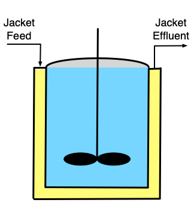
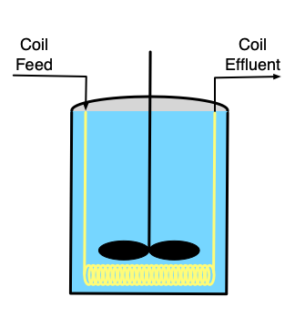
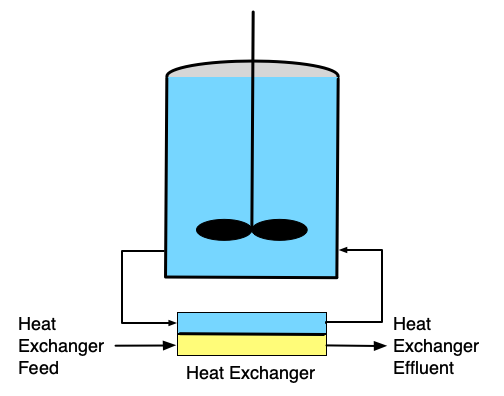
If it is necessary to heat or cool the reactor, a heat exchange fluid (indicated by yellow shading in the figure) may flow in and out of the the reactor during operation, but the heat exchange fluid is physically separated from the reacting fluid. Figure 13.1 depicts three common configurations for exchange of heat with an external fluid. One (a in the figure) is referred to as a shell or jacket. It is a compartment that surrounds the reacting fluid and has an external heat exchange fluid flowing through it. Another (b in the figure) consists of a coil of tubing that is submerged in the reacting fluid. The heat exchange fluid flows within the coil. The third (c in the figure) is an external heat exchanger. With the latter configuration it is important that the reacting fluid circulates through the heat exchanger rapidly so that the assumption of perfect mixing of the reacting fluid is satisfied. In all three configurations, it is possible that the exchange fluid temperture is not uniform. Nonetheless, in Reaction Engineering Basics it is always assumed that the heat exchange fluid (within the shell, coil or external heat exchanger) is perfectly mixed.
Stirred tanks are not often used for the processing of gases or when a solid catalyst is being used because stirring gases or small solids praticles is difficult. However, configurations different from a stirred tank can be modeled as BSTRs as long as the critical assumptions are met (perfect mixing and no reagent flow in or out of the reactor). Chapter 9 describes a few laboratory BSTRs that are not stirred tanks. Similarly, any reactor in a chemical processing facility that conforms to the assumptions used when deriving the BSTR design equations can be modeled as a BSTR. Heat can be added or removed from a reactor in ways that do not involve an exchange fluid. For example, an electric resistance heating element might be used to add heat. Reaction Engineering Basics only considers heat transfer to or from an external heat exchange fluid.
There are advantages to using a BSTR, as opposed to the other types of ideal reactors, particularly the flow reactors (CSTRs and PFRs). BSTRs offer flexibility both in terms of the reactions being run and in the details of operating the process. In a situation where the demand for products is too small to warrant continuous production, a batch reactor might be used to make one product for a few weeks, and then be used to make a different product for the next few weeks. This kind of flexibility avoids having the reactor sit idle for extended periods of time. Similarly, if the production of a product involves heating to and holding at two or more different temperatures during processing, it may be easier to produce it in a batch reactor than to set up a chain of continuous reactors operating at the necessary temperatures. Similarly, if the addition of one reagent needs to be delayed, it may be possible to do so using a BSTR as described below under BSTR Operation. Again, this may be preferred over two continuous reactors operating in series with that reagent added to the second reactor. In contrast to PFRs, the heat transfer area per volume of reacting fluid can be varied over a wide range of values at the time of design. Even after the reactor has been constructed, the length of a submerged coil or the area of an external heat exchanger can be changed if additional heat transfer capability is needed.
There are also disadvantages to using BSTRs. As described below, the operation of a BSTR includes periods of time during which no reaction is taking place. Compared to reactors like CSTRs and PFRs that run continuously, this can lead to a lower net rate of reaction. Additionally, the operation of a BSTR is more labor intensive than operation of a continuous reactor. This adds to the cost of production, meaning a higher selling price is necessary in order to make a profit. Another issue with batch processes is that of batch-to-batch consistency. As an example, consider the batch production of an expensive perfume. It is critically imporant that every batch smells the same. Consequently, in addition to being labor intensive, batch processing requires well-trained operators who are careful to precisely follow the specified operational procedure and not deviate from it. Food and beverage production similarly demand high batch-to-batch consistency. This can be even more challenging if, as an example, the process utilizes agricultural reagents that can vary from season to season or year to year.
In light of their advantages and disadvantages, BSTRs are often used to produce value-added products. These are products for which the market demand is smaller, but the price, and therefore the profit per pound, is greater. This is in contrast to commodity products where the demand for large quantities is high, but the price per pound is relatively small. High volume production is usually performed in a continuous reactor (CSTR or PFR).
13.2 BSTR Operation
By definition, reaction does not take place continuously in a batch reactor. Before reaction can take place, the reactor must first be cleaned (or, in some cases, sterilized) to remove anything “left behind” by the last reaction that was run. Then the reactants must be prepared and charged into the reactor. From this point on, the operation is much like a cooking recipe. A prescribed series of heating and cooling steps is followed, with reaction taking place during every step. A simple example might be that after the reactants are charged, the reactor is heated to a specified temperature, held at that temperature for a specified length of time, and then cooled back to room temperature. In almost all situations, the reaction has ceased by the end of the last step, either because one of the reactants has been fully consumed or because the temperature has been lowered to the point where the rate is effectively zero. The last step in the operating protocol then is to remove the product from the reactor. Often it is transferred to a holding tank from which it can be sent elsewhere for further processing, purification, or longer term storage.
Of course, the operational protocol, i. e. the “recipe,” could be more complicated, requiring any number of steps. In some cases the operational protocol might call for the addition of a reagent. As long as that reagent is added instantaneously and all at once, the reactor can be analyzed as a BSTR. However, if the reagent is added over time as reactions continue to occur, the reactor is no longer a BSTR and that phase of processing must be analzyed as a semi-batch reactor (Chapter 14).
It is very important to recognize that the productivity of the reactor, that is the amount of product it produces per hour, must be calculated taking the so-called turnaround time into account. That is, one must include the time needed to clean, fill and drain the reactor, not just the length of time reaction takes place. Doing so permits the definition of the net rate of generation of reagent \(i\) given in Equation 13.1.
\[ r_{i,net} = \frac{n_i - n_{i,0}}{t_{rxn} + t_{turn}} \tag{13.1}\]
Even if the turnaround time was zero, it would still be desirable to define a net rate as above. The net rate is useful for characterizing the overall process. As the reaction is progressing, the rate of reaction is continually changing because the temperature and composition are changing. The rate of reaction at any one time during the processing is referred to as the instantaneous rate at that time. The net rate defined in Equation 13.1 is a kind of average of the instantaneous rate over the processing time. Similarly, it is sometimes useful to differentiate between overall and instantaneous values of other quantities such as yields, conversions, selectivities, etc.
13.3 Qualitative Analysis of Reaction in a BSTR
A simple process for the qualitative analysis of a reacting system was presented in Chapter 12. In a BSTR, there are no spatial variations in temperature or composition because the reactor is perfectly mixed. Therefore, qualitative analysis of a BSTR is used to determine how temperature, reaction rate, composition and related quantities (conversion, selectivity) vary with reaction time.
For purposes of illustration, suppose the typical, irreversible, exothermic reaction, \(A \rightarrow Z\) takes place in an isothermal BSTR. In this situation, only the concentrations need to be considered because in an isothermal reactor the temperature does not change. At the start of the process, the concentration of A will be high and that of Z will be small or zero. During a very small interval of time at the start of the process the concentration of A will decrease and the concentration of Z will increase due to the reaction starting to take place. Hence, in a plot of reactant concentration versus reaction time, the \(y\)-intercept will be high and the slope at that point will be negative. For the product, the \(y\)-intercept will be low or zero and the initial slope will be positive.
The changes in composition will affect the reaction rate. For a typical, irreversible reaction, the decrease in the reactant concentration will tend to decrease the rate while the increase in the product concentration will not affect it. Consequently, at the end of that small interval of reaction time, the rate will be smaller.
In the next small interval of time, the concentration of the reactant, A, will decrease by less than it did in the first interval because the rate is lower. For the same reason, the concentration of the product, Z, will increase by less than it did during the first interval of time. In terms of graphs showing the concentrations versus time, then, the concentration of the reactant, A, will start high with a negative slope and a curvature that is concave upward. That is, the slope will become less steep as the reaction time increases. In like manner, a graph showing the concentration of Z versus reaction time will start at or near zero with a positive slope and a curvature that is concave downward (i. e. the slope will get less steep as the reaction time increases).
If that initial behavior continued througout the process, the concentration of the reactant would decrease with a smaller and smaller slope until finally reaching a horizontal plateau at a value of zero (because the reaction is irreversible and therefor goes to completion). The concentration of the product would increase with a smaller and smaller slope until finally reaching a plateau at a value equal to the initial concentration of A (because the stoichiometry is 1 Z per A). The results of this qualitative analysis are shown in Figure 13.2.
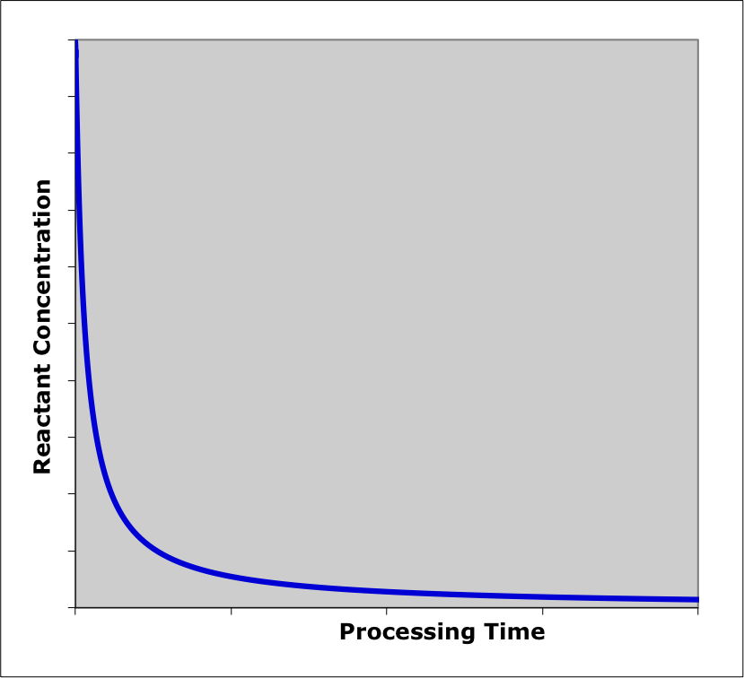
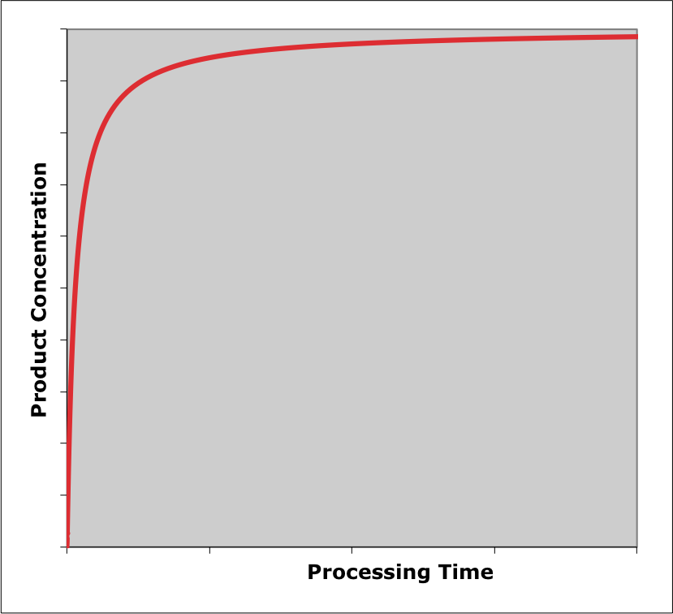
The qualitative analysis here was straightforward because the reactor was isothermal. In Example 13.7.1 the qualitative analysis of an adiabatic BSTR is presented. That analysis is more complicated because both concentrations and temperature are changing. In fact, the changes in composition and temperature, taken separately, would affect the rate in opposite ways. As a consequence there is greater uncertainty in the results.
13.4 BSTR Design Equations
The reactor design equations for BSTRs were presented in Chapter 6. The BSTR mole and energy balances shown below were presented in Equations 6.8 and 6.9. That chapter also presents the energy balances shown below for a heat exchange fluid that transfers sensible heat, Equation 6.2, and one that transfers latent heat, Equation 6.6. Chapter 6 also describes how to select the specific reactor design equations needed to model BSTRs under different circumstances. That discussion will not be duplicated here.
\[ \frac{dn_i}{dt} = V \sum_j \nu_{i,j}r_j \]
\[ \left(\sum_i n_i \hat C_{p,i} \right) \frac{dT}{dt} - V\frac{dP}{dt} - P \frac{dV}{dt} = \dot Q - \dot W - V \sum_j \left(r_j \Delta H_j \right) \]
\[ \rho_{ex} V_{ex} \tilde C_{p,ex}\frac{dT_{ex}}{dt} = -\dot Q - \dot m_{ex} \int_{T_{ex,in}}^{T_{ex}} \tilde C_{p,ex}dT \]
\[ \frac{\rho_{ex} V_{ex} \Delta H_{\text{latent},ex}^0}{M_{ex}} \frac{d \gamma}{dt} = - \dot Q - \gamma \dot m_{ex} \frac{\Delta H_{\text{latent},ex}^0}{M_{ex}} \]
The design equations can often be simplified. As noted in Chapter 6, if the reactor walls are rigid (or if an ideal, incompressible liquid is being processed) then the volume, \(V\), will be constant and its time derivative, \(\frac{dV}{dt}\), will equal zero. If the work associated with agitation is negligible (it usually is) and there are no other shafts or moving boundaries, then the rate at which the reacting fluid performs work, \(\dot W\), on its surroundings is also equal to zero. When an ideal, incompressible liquid is being processed, the pressure, \(P\), is constant and its time derivative, \(\frac{dP}{dt}\), is equal to zero. Finally, for liquids, Equation 6.10 showed how the sensible heat term in Equation 6.9 can be expressed in terms of the mass-specific or volume-specific heat capacity of the solution as a whole instead of the individual molar heat capacities.
\[ \left(\sum_i n_i \hat C_{p,i} \right) \frac{dT}{dt}\ \Leftrightarrow\ \rho V \tilde C_p \frac{dT}{dt}\ \Leftrightarrow\ V \breve C_p \frac{dT}{dt} \]
When rate expressions are substituted into the BSTR mole and energy balances, they typically introduce concentrations or partial pressures of reagents. When the design equations are solved, those concentrations and partial pressures must be expressed in terms of the molar amounts of the reagents. The concentration is simply the molar amount divided by the volume, Equation 1.7.
\[ C_i = \frac{n_i}{V} \]
For ideal gases, the partial pressure is related to the molar amount through the ideal gas law, Equation 1.12.
\[ P_i = \frac{n_iRT}{V} \]
When heat transfer involves an exchange fluid as shown in Figure 13.1, the rate of heat exchange in the energy balances can be calculated using Equation 6.18. If the reactor operates adiabatically (i. e. it is perfectly insulated and does not have a shell, coil or external heat exchanger as in Figure 13.1), \(\dot{Q}\) is equal to zero.
\[ \dot Q = UA\left( T_{ex} - T \right) \]
13.5 General Approach to Modeling Isolated BSTRs
Chapter 12 described how to identify a reaction engineering assignment that involves the modeling of an isolated ideal reactor and suggested that such assignments can be completed in five basic steps.
- Summarize the information provided in the assignment.
- Formulate the solution mathematically.
- Implement the solution numerically.
- Execute the solution.
- Report and comment upon the results.
This section describes the application of that approach to the modeling of an isolated BSTR. The process may seem a bit abstract when first read, but it should become clearer after seeing it used in the examples provided at the end of this chapter.
Often the operational protocol for a BSTR has multiple heating and cooling steps. When this is true, each step of the protocol can be analyzed separately from the other steps. The reactor design equations for BSTRs are initial value ordinary differential equations (IVODEs), and the steps occur sequentially. Consequently the values of the independent and dependent variables at the end of one step in the operating protocol become the initial values for the next step.
Summarizing the information provided in the assignment. When learning reaction engineering, assignments are often presented as a written narrative that describes the reactor, reactions, and tasks associated with the assignment. When completing the assignment, it is useful to read through that narrative and make a concise listing of the information it provides. Specifically, it is useful to note that the reactor is a BSTR and to indicate its operational mode as either isothermal, adiabatic, or neither. As the narrative is read, each time a numerical value is encountered, an appropriate variable symbol should be chosen to represent it (for example \(n_{A,0}\) for the initial number of moles of reagent A), and the variable should be set equal to the given value in the narative and added to the summary.
If the narrative indicates that a quantity of interest should be plotted, tabulated, minimized, or maximized, with respect to other, adjusted variables, that means that the reactor model will need to be solved multiple times using a range of values of the adjusted variables. When summarizing the information provided in the assignment, it can be helpful to identify the adjusted variables.
The reactor design equations for a BSTR are IVODEs. In order to numerically solve the BSTR reactor design equations all of the reactor inputs (initial molar amounts, initial temperature, exchange fluid mass flow rate, and inlet exchange fluid temperature) and all of the process parameters other than the reaction time (reacting fluid volume, heat transfer area and, heat transfer coefficient) must be known. In other words, every constant quantity appearing in the design equations and the initial values of the dependent variables must be known. The design equations can then be solved for the reactor outputs (final molar amounts, final temperature, and outlet exchange fluid temperature or fraction of exchange fluid that changes phase). Then quantities related to the reactor outputs like the conversion, final concentration, final selectivity, etc. can be calculated.
However, some assignments specify the value of one reactor output or related response and task the engineer with finding the reactor input or process parameter that will result in that reactor output. If, while reading through the assignment narrative, it is noticed that a necessary reactor input or process parameter is missing and a reactor output or related response is specified, the missing quantity and the specified response should be included in the summary of information provided in the assignment. If this is not noticed at this point, it will become apparent when mathematically formulating the solution, and the missing input/parameter and the specified response can be added to the summary at that point.
Finally, the summary of information provided in the assighment should list every quantity of interest in the assignment. That is, it should list the quantities that are requested in the assignment.
- Summarize the information provided in the assignment.
- Reactor type and operational mode
- Constant quantities
- Adjusted quantities
- Missing reactor input or process parameter and specified reactor response
- Quantities of interest
Formulating the solution mathematically. It is necessary to solve the BSTR reactor design equations when completing an isolated BSTR modeling assignment. Selecting which equations are needed to model a given BSTR and simplifying those design equations was described in Chapter 6 and in the preceding section of this chapter.
The design equations for an isolated BSTR will be a set of IVODEs. The independent variable will be the elapsed time since the start of processing, \(t\). The dependent variables will be the molar amounts of the reagents present in the system, \(n_i\), the temperature of the reacting fluid, \(T\), (assuming an energy balance is needed to model the BSTR), and either the outlet temperature of the exchange fluid, \(T_{ex}\), or the fraction of the exchange fluid that undergoes phase change, \(\gamma\) (assuming an exchange fluid energy balance is needed to model the BSTR).
However, if the reacting fluid is a gas and the reactor design equations include an energy balance on the reacting fluid, the pressure will aslo appear as a dependent variable. A set of IVODEs can only be solved if the number of IVODEs is equal to the number of dependent variables. Consequently, when a reacting fluid energy balance is being used and the reacting fluid is a gas, another equation is needed. In Reaction Engineering Basics gases are always assumed to be ideal, and a differential form of the ideal gas law, Equation 6.11, is needed. This equation can either be added to the reactor design equations, making the number of equations equal to the number of dependent variables, or it can be used to eliminate \(\frac{dP}{dt}\) from the energy balance, so that \(P\) is no longer a dependent variable.
\[ P \frac{dV}{dt} + V \frac{dP}{dt} - R \left( T \sum_i \frac{dn_i}{dt} + \left( \sum_i n_i \right) \frac{dT}{dt} \right) = 0 \]
Typically \(t=0\) is defined to be the instant the reagents were charged into the BSTR. To solve the BSTR design equations, the value of every dependent variable at that instant must be specified and calculated. Additionally, the value of either \(t\) or one of the dependent variables at the end of the first step in the operating protocol must be specified and calculated. This is called the stopping criterion. When the operational protocol involves multiple steps, the reactor design equations can be written and solved separately for each step. Since the steps occur sequentially with each one immediately following the one before it, final values of the independent and dependent variables in one step become the initial values for the next step.
In addition to providing initial values and a stopping criterion, every quantity that appears in the design equations or in an equation that is substituted into the design equations, must be expressed in terms of known constants, the independent variable, \(t\) and the dependent variables. While doing this, it will become apparent if there is a missing reactor input or process parameter, and if the missing quantity was not identified when the information provided in the assignment was summarized it can be added to the summary together with the reactor response that is specified in the assignment. During mathematical formulation of the solution, the adjusted quantities and the missing value are treated as known constants.
After specifying the initial values and stopping criterion and expressing all quantities in the design equations in terms of known constants, \(t\), and the dependent variables, the reactor design equations can be solved numerically. Doing so will yield a set of times from the start to the end of processing and corresponding sets of values of each of the dependent variables at those times. Equations must be provided that use those to calculate all of the quantities of interest and the value of the specified response, if there is one.
Finally, making specific reference to each equation written during the mathematical formulation, the sequence of calculations that need to be performed to find the values of the quantities of interest and the specified response (if there is one) should be briefly explained or outlined. This should include any processing of the quantities of interest such as plotting, finding a minimum or maximum value, etc.
- Formulate the solution mathematically.
- Choose, write and simplify the reactor design equations needed to model the reactor.
- Identify the independent variable and the dependent variables, and ensure that the number of dependent variables is equal to the number of reactor design equations.
- Specify the initial values and the stopping criterion, and write equations for calculating their values.
- Write equations to express every quantity appearing in the reactor design equations or in equations that will be substituted into the reactor design equations in terms of known constants, the independent variable, the dependent variables, the missing reactor input or process parameter (if there is one), and the adjusted quantities (if there are any).
- Write the equations to calculate every quantity of interest and the response that was specified in the assignment (if there is one) using the results from solving the reactor design equations, the independent variable, the dependent variables, the missing reactor input or process parameter (if there is one), and the adjusted quantities (if there are any).
- Briefly explain or outline the sequence of calculations that must be used to calculate and process the quantities of interest (and the response that was specified in the assignment, if there is one).
Implementing the solution numerically. In Reaction Engineering Basics two computer functions are always created when implementing the solution of an isolated BSTR modeling assignment numerically. The first function is called the response function. The response function solves the reactor design equations and uses the results to calculate the quantities of interest and the specified response, if there is one. It then returns the quantities of interest and the specified response, if there is one. If there are sets of adjusted quantities, it does that for each set of adjusted quantities, and it returns the corresponding quantities of interest and specified responses for each of the sets of adjusted quantities.
Depending upon the nature of the assignment, the response function may receive 0, 1, or 2 arrguments as input. If there are sets of adjusted quantities, they are passed to the response function as a matrix where each row of the matrix contains one set of adjusted quantities and the columns correspond to the individual adjusted quantities. If there is a missing reactor input or process parameter, it is passed to the response function as a separate argument. (If there are sets of adjusted quantities, then a corresponding set of missing values are passed to the response function as a vector argument.).
Within the response function, variables representing each known, constant are defined first. The response function then loops through the sets of adjusted quantities. Each time through the loop it solves the design equations numerically, calculates the quantities of interest (and the specified response, if there is one), and saves the results. Once the loop is completed, the response function returns the quantities of interest (and specified response, if there is one) for all of the sets of adjusted quantities.
The other function that is created when implementing the solution numerically is called the calculations function. Its purpose is to perform the sequence of calculations that must be used to calculate the quantities of interest and process them as needed to complete the assignment. If the assignment provides all of the necessary reactor inputs and process parameters, then the calculations function simply calls the response function to get the quantities of interest and then processes them (i.e. plots them, identifies a maximum value, etc.) as necessary to complete the assignment.
If there is a missing reactor input or process parameter, the calculations function must use response function to create a function that evaluates the residual, Equation 12.2. It then must pass that function to an algebraic-transcendental equation (ATE) solver along with a guess for the missing value. The ATE solver returns the missing reactor input or process parameter. The calculations function can then call the response function directly, passing the missing missing reactor input or process parameter as a argument. The quantities of interest are returned by the response function and processed as necessary to complete the assignment.
- Implement the solution numerically.
- Create a response function.
- Pass the missing value (if there is one) and the adjusted values (if there are any) to it as arguments.
- Solve the reactor design equations for each set of adjusted values.
- Calculate and return the quantities of interest (and the specified response if there is one) corresponding to each set of adjusted values.
- Create a calculations function.
- Perform the sequence of calculations that is needed to calculate the quantities of interest, calling or using the response function as needed.
- Process the quantities of interest as necessary to complete the assignment.
- Create a response function.
- Execute the solution.
- Report and comment upon the results.
The last two steps are straightforward and do not require discussion.
13.6 BSTR Design Objectives
As noted in Chapter 12, design assignments typically do not fully specify the reactor system or its operation. They require the engineer find a set of system and process specifications that optimize some financial objective such as maximizing the rate of profit. That can entail calculation of fixed and operating costs, etc. together with reactor modeling. These types of design problems are beyond the scope of Reaction Engineering Basics. However, for illustrative purposes, reactor and process parameters can be used as indicators of these costs. For an isolated BSTR a few of the reactor and process parameters that might be used as economic indicators include the system volume (smaller is better), the processing time (shorter is better), the net production rate, Equation 13.1, (larger is better), heat requirements (smaller is better), and selectivity or yield of one of the products. These indicators can be minimized or maximized using other reactor and process parameters including initial composition, temperature, reaction time, etc. Design assignments involving BSTRs are considered in Chapter 15.
13.7 Examples
The examples in this section illustrate the analysis of isolated BSTRs. Examples 13.7.1 and 13.7.2 are response assignments where the assignment specifies a sufficient number of quantities so that the reactor design equations can be solved to find the quantities of interest. In Example 13.7.1 all necessary reactor inputs and process parameters are specified and the quantities of interest are related to reactor outputs. In Example 13.7.2 a reactor output is specified (the conversion), and one of the unknown quantities of interest is a reactor input (the initial temperature). In addition to illustrating the computational procedure for these two types of response tasks, Example 13.7.1 involves a single reaction taking place in an adiabatic BSTR while Example 13.7.2 features two reactions taking place in a BSTR that is cooled using an exchange fluid. Examples 13.7.3 and 13.7.4 are optimization assignments that identify a reactor variable that must be maximized or minimized by specifying a reactor input. The computational procedure for solving optimization problems differs slightly from the procedures for solving response problems. The BSTR operational protocol in Example 13.7.3, like those in Examples 13.7.1 and 13.7.2, consists of a single step. Example 13.7.4 illustrates a situation where there are multiple steps in the operating protocol. It also considers turnaround time and the net rate of reaction.
13.7.1 Concentration, Temperature and Rate Profiles during Adiabatic Operation of a BSTR
The liquid-phase reaction between A and B, equation (1), is irreversible. At the conditions of interest in this assignment, the heat of reaction is constant and equal to -101.2 kJ mol-1. The rate expression is given in equation (2), where the rate coefficient exhibits Arrhenius temperature dependence with a pre-exponential factor of 5.11 x 104 L mol-1 s-1 and an activation energy of 74.8 kJ mol-1.
Two solutions, one containing only reagent A at 180 °C and one containing only reagent B at 180 °C, are charged to an adiabatic BSTR producing 1900 L of solution initially containing 2.9 mol A L-1 and 3.2 mol B L-1 at 180 °C. The solution is ideal and has a constant heat capacity of 1.23 cal g-1 K-1 and a constant density of 1.02 g cm-3. Plot the concentrations of A, B, Y, and Z, the reacting fluid temperature, and the instantaneous reaction rate for the first 2 h of reaction, and comment upon the shapes of the graphs.
\[ A + B \rightarrow Y + Z \tag{1} \]
\[ r = kC_AC_B \tag{2} \]
Click Here to See What an Expert Might be Thinking at this Point
This assignment describes a single BSTR and its operation. There is no other equipment. The reaction taking place in the reactor is identified, and a rate expression is provided for it. The quantities of interest in the assignment are reactor variables. I know from Chapter 12 that this combination of characteristics identifies this as an isolated reactor modeling assignment.
I know the general approach to completing an isolated reactor modeling assignment that was described in Chapter 12. There are five basic steps.
- Summarize the information provided in the assignment.
- Formulate the solution mathematically.
- Implement the solution numerically.
- Execute the solution.
- Report and comment upon the results.
To summarize the information provided in the assignment I’ll read through the problem and extract the following information:
- Summarize the information provided in the assignment.
- Reactor type and operational mode
- Constant quantities
- Adjusted quantities
- Missing reactor input or process parameter and specified reactor response
- Quantities of interest
Information Provided in the Assignment
Reactor: adiabatic BSTR
Given Constants: \(\Delta H_1\) = -101.2 kJ mol-1, \(k_{0,1}\) = 5.11 x 104 L mol-1 s-1, \(E_1\) = 74.8 kJ mol-1, \(V\) = 1900 L}, \(T_0\) = (180 + 273.15) K, \(C_{A,0}\) = 2.9 mol L-1, \(C_{B,0}\) = 3.2 mol L-1, \(\tilde{C}_p\) = 1.23 cal g-1 K-1, \(\rho\) = 1.02 g cm-3, and \(t_{max}\) = 2 h.
Adjusted Quantity: \(t\)
Quantities of Interest: \(C_A\left(t\right)\), \(C_B\left(t\right)\), \(C_Y\left(t\right)\), \(C_Z\left(t\right)\), \(T\left(t\right)\), and \(r\left(t\right)\) where \(0 \lt t \lt t_{max}\).
Click Here to See What an Expert Might be Thinking at this Point
The second basic step for completing an isolated BSTR modeling assignment is to formulate the solution mathematically. From my reading of this chapter, I know, generally, how to do this.
- Formulate the solution mathematically.
- Choose, write and simplify the reactor design equations needed to model the reactor.
- Identify the independent variable and the dependent variables, and ensure that the number of dependent variables is equal to the number of reactor design equations.
- Specify the initial values and the stopping criterion, and write equations for calculating their values.
- Write equations to express every quantity appearing in the reactor design equations or in equations that will be substituted into the reactor design equations in terms of known constants, the independent variable, the dependent variables, the missing reactor input or process parameter (if there is one), and the adjusted quantities (if there are any).
- Write the equations to calculate every quantity of interest and the response that was specified in the assignment (if there is one) using the results from solving the reactor design equations, the independent variable, the dependent variables, the missing reactor input or process parameter (if there is one), and the adjusted quantities (if there are any).
- Briefly explain or outline the sequence of calculations that must be used to calculate and process the quantities of interest (and the response that was specified in the assignment, if there is one).
Mathematical Formulation of the Solution
Click Here to See What an Expert Might be Thinking at this Point
Mole balances are always included in the reactor design equations. Here I will write a mole balance for each of the four reagents starting from Equation 6.8. There is only one reaction taking place, so the summation reduces to a single term. The stoichiometric coefficients of A and B are each equal to -1, and the stoichiometric coefficients of Y and Z are each equal to +1.
\[ \frac{dn_i}{dt} = V \cancelto{\nu_i r}{\sum_j \nu_{i,j}r_j} \]
\[ \frac{dn_i}{dt} = V \nu_i r \]
The BSTR in this assignment is not isothermal; it is adiabatic. Therefore an energy balance must also be included among the design equations. The general form of the BSTR energy balance is given in Equation 6.9. The reacting fluid is a liquid which I will assume to be an incompressible ideal solution. Consequently, the reacting fluid volume and the total pressure are constant, and their time derivatives are equal to zero. The reactor is adiabatic, so the rate of heat input, \(\dot{Q}\), is equal to zero. There are no shafts or moving boundaries other than the agitator, and the rate at which it performs work is negligible, so \(\dot{W}\) is also equal to zero. With only one reaction taking place, the summation over the reactions, \(j\), reduces to a single term. Finally, this assignment provides the mass-specific heat capacity of the entire solution, so the sensible heat term can be re-written using that heat capacity, Equation 6.10.
\[ \cancelto{\rho V \tilde{C}_p}{\left(\sum_i n_i \hat C_{p,i} \right)} \frac{dT}{dt} - \cancelto{0}{V\frac{dP}{dt}} - \cancelto{0}{P\frac{dV}{dt}} = \cancelto{0}{\dot Q} - \cancelto{0}{\dot W} - V \cancelto{r \Delta H}{\sum_j \left(r_j \Delta H_j \right)} \]
\[ \rho V \tilde{C}_p \frac{dT}{dt} = - V r \Delta H \]
The BSTR here operates adiabatically, so there isn’t an exchange fluid for which to write an energy balance, and momentum balances are not used with BSTRs, so that completes the reactor design equations needed to model the BSTR in this assignment.
Reactor Design Equations
Mole balance design equations for A, B, Y, and Z are presented in equations (3) through (6), and the energy balance on the reacting fluid is given by equation (7).
\[ \frac{dn_A}{dt} = -rV \tag{3} \]
\[ \frac{dn_B}{dt} = -rV \tag{4} \]
\[ \frac{dn_Y}{dt} = rV \tag{5} \]
\[ \frac{dn_Z}{dt} = rV \tag{6} \]
\[ \frac{dT}{dt} = \frac{-r \Delta H_1}{\rho \tilde{C}_p} \tag{7} \]
Click Here to See What an Expert Might be Thinking at this Point
The reactor design equations are a set of five IVODEs. The independent variable is \(t\) and the dependent variables are \(n_A\), \(n_B\), \(n_Y\), \(n_Z\), and \(T\). There are five IVODEs and five dependent variables, so no other IVODEs are needed. Initial values and a stopping criterion are needed in order to solve IVODEs.
The instant the fluids are mixed in the reactor can be defined as \(t=0\). The fluids that are charged to the reactor do not contain Y or Z, so their initial molar amounts are zero. The initial molar amounts of A and B, \(n_{A,0}\) and \(n_{B,0}\), are not given, but they can be calculated from their initial concentrations and the reactor volume, which are given. The initial temperature, \(T_0\) is given.
The assignment asks for the reagent concentrations, temperature, and rate over the first 2 h of operation, so \(t_{max}\) can be used to represent the stopping criterion and be set equal to 2 h.
Initial Values and Stopping Criterion
The initial values and stopping criterion needed for solving the design equations are given in Table 13.1. The initial molar amounts of A and B shown in the table can be calculated using equations (8) and (9).
| Variable | Initial Value | Stopping Criterion |
|---|---|---|
| \(t\) | \(0\) | \(t_{max}\) |
| \(n_A\) | \(n_{A,0}\) | |
| \(n_B\) | \(n_{B,0}\) | |
| \(n_Y\) | \(0\) | |
| \(n_Z\) | \(0\) | |
| \(T\) | \(T_0\) |
\[ n_{A,0} = C_{A,0}V \tag{8} \]
\[ n_{B,0} = C_{B,0}V \tag{9} \]
Click Here to See What an Expert Might be Thinking at this Point
The design equations cannot be solved until every quantity appearing in them and every quantity substituted into them is expressed in terms of known constants, the independent variable and the dependent variables. The only quantity appearing in equations (3) through (7) that isn’t a known constant, the independent variable or a dependent variable is the rate, \(r\). Equation (2) can be used to eliminate \(r\) from the design equations, but that introduces \(k\), \(C_A\), and \(C_B\). The rate coefficient can be expressed in terms of \(T\) and known constants using the Arrhenius expression, Equation 4.8. The concentrations of A and B can be expressed in terms of \(n_A\), \(n_B\), and known constants using the defining equation for concentration.
Having gone through the equations I can see that the values of all of the reactor inputs and process parameters are known. There aren’t any missing values.
Ancillary Equations for Solving the Reactor Design Equations
\[ k = k_{0,1}\exp{\left( \frac{-E_1}{RT} \right)} \tag{10} \]
\[ C_A = \frac{n_A}{V} \tag{11} \]
\[ C_B = \frac{n_B}{V} \tag{12} \]
Click Here to See What an Expert Might be Thinking at this Point
With the information provided above, the design equations can be solved to find \(n_A\left(t\right)\), \(n_B\left(t\right)\), \(n_Y\left(t\right)\), \(n_Z\left(t\right)\), and \(T\left(t\right)\) for \(0 \le t \le t_{max}\). The quantities of interest in the assignment are the concentrations of the reagents, the temperature, and the instantaneous reaction rate. The concentrations can again be calculated using the defining equation for concentration, and the rate can be calculated using equations (2), (10), (11), and (12).
Ancillary Equations for Calculating the Quantities of Interest
Solving equations (3) through (7) will yield \(n_A\left(t\right)\), \(n_B\left(t\right)\), \(n_Y\left(t\right)\), \(n_Z\left(t\right)\), and \(T\left(t\right)\) for \(0 \le t \le t_{max}\). The concentrations of A, B, Y, and Z at those times can be computed using equations (11) through (14). The instantaneous reaction rate at those times can be found by calculating \(k\) using equation (10), and using the result along with the concentrations of A and B in equation (2).
\[ C_Y = \frac{n_Y}{V} \tag{13} \]
\[ C_Z = \frac{n_B}{V} \tag{14} \]
Sequence of Calculations to Complete the Assignment
- Substitute given and known constants into all equations.
- Substitute equations (10), (11), and (12) into equation (2).
- Substitute equation (2) into equations (3) through (7).
- Calculate \(n_{A,0}\) and \(n_{B,0}\) using equations (8) and (9).
- Solve equations (3) through (7) using the initial values and stopping criterion in Table 13.1 to get \(n_A\left(t\right)\), \(n_B\left(t\right)\), \(n_Y\left(t\right)\), \(n_Z\left(t\right)\), and \(T\left(t\right)\).
- Calculate \(C_A\left(t\right)\), \(C_B\left(t\right)\), \(C_Y\left(t\right)\), and \(C_Z\left(t\right)\) using equations (11) through (14).
- Calculate \(r\left(t\right)\) by substituting equation (10), \(C_A\left(t\right)\), and \(C_B\left(t\right)\) into equation (2).
- Plot \(C_A\left(t\right)\), \(C_B\left(t\right)\), \(C_Y\left(t\right)\), \(C_Z\left(t\right)\), \(T\left(t\right)\), and \(r\left(t\right)\) vs. \(t\).
Click Here to See What an Expert Might be Thinking at this Point
Having formulated the solution mathematically, the third basic step for completing an isolated reactor modeling assignment is to implement the solution numerically. I know that this will entail creating two computer functions.
- Implement the solution numerically.
- Create a response function.
- Pass the missing value (if there is one) and the adjusted values (if there are any) to it as arguments.
- Solve the reactor design equations for each set of adjusted values.
- Calculate and return the quantities of interest (and the specified response if there is one) corresponding to each set of adjusted values.
- Create a calculations function.
- Perform the sequence of calculations that is needed to calculate the quantities of interest, calling or using the response function as needed.
- Process the quantities of interest as necessary to complete the assignment.
- Create a response function.
Numerical Implementation of the Solution
Click Here to See What an Expert Might be Thinking at this Point
I know that the purpose of the response function is to calculate the quantities of interest. In this assignment there isn’t a missing reactor input or process parameters. That means that the response function will not have a missing value argument.
There is an adjusted value, namely \(t\). However, in this assignment I do not need to pass a range of values of \(t\) to the response function because the IVODE solver will generate a range of values between \(t = 0\) and \(t=t_{rxn}\) as it solves the IVODEs.
When IVODEs are solved numerically, analytic expressions for the dependent variables as functions of the dependent variables (e. g. \(n_A\left(t\right)\)) are not obtained. Instead the solution takes the form of a vector containing values of the independent variable and vectors containing corresponding values of the dependent variables. Hence, the response function must complete the first seven steps in the sequence given above and then return a vector containing the range of values of \(t\) and vectors containing the correponding values of \(C_A\), \(C_B\), \(C_Y\), \(C_Z\), \(T\), and \(r\).
Response Function
The response function is created with the following structure:
- It does not receive any arguments.
- Variables are defined and assigned the values of all known and given quantities.
- The initial values and stopping criterion are set according to Table 13.1 and equations (8) and (9).
- In preparation for solving the IVODEs, it defines a function to evaluate \(\frac{dn_A}{dt}\), \(\frac{dn_B}{dt}\), \(\frac{dn_Y}{dt}\), \(\frac{dn_Z}{dt}\), and \(\frac{dT}{dt}\) using equations (3) through (7). That function
- Receives values for \(t\), \(n_A\), \(n_B\), \(n_Y\), \(n_Z\), and \(T\),
- Calculates calcuate \(k\), \(C_A\), and \(C_B\) using equations (10) through (12),
- Calculates \(r\) using equation (2), and
- Calculates and returns the values \(\frac{dn_A}{dt}\), \(\frac{dn_B}{dt}\), \(\frac{dn_Y}{dt}\), \(\frac{dn_Z}{dt}\), and \(\frac{dT}{dt}\) using equations (3) through (7).
- The response function then calls an IVODE solver, passing that function and the initial values and stopping criterion to it.
- The IVODE solver returns a vector containing a range of values of \(t\) and vectors containing the correponding values of \(n_A\), \(n_B\), \(n_Y\), \(n_Z\), and \(T\).
- The returned values are used to calculate vectors containing the corresponding values of \(C_A\), \(C_B\), \(C_Y\), and \(C_Z\).
- The vectors containing \(T\), \(C_A\), and \(C_B\) are used to calculate a vector containing the corresponding values of \(r\) using equations (10) and (2).
- The response function returns a vector containing the range of values of \(t\) and vectors containing the correponding values of \(C_A\), \(C_B\), \(C_Y\), \(C_Z\), \(T\), and \(r\)
Click Here to See What an Expert Might be Thinking at this Point
The calculations function is responsible for performing the entire sequence of calculations listed at the end of the mathematical formulation. It can accomplish the first seven steps by simply calling the response function. After that all it needs to do is generate the graphs that are requested in the assignment.
Calculations Function
The calculations function is created with the following structure:
- It does not receive any arguments.
- It calls the response function.
- The response function returns a vector containing the range of values of \(t\) and vectors containing the correponding values of \(C_A\), \(C_B\), \(C_Y\), \(C_Z\), \(T\), and \(r\)
- It generates and displays graphs by plotting \(C_A\), \(C_B\), \(C_Y\), \(C_Z\), \(T\), and \(r\) vs. \(t\).
- It saves the results to one or more files.
Performing the Calculations
After creating the response function and calculations function as described, all of the calculations needed to complete the assignment can be performed by executing the calculations function.
Results
The variation of concentrations of reagents, A, B, Y, and Z, during the first two hours of operation of the BSTR are shown in Figure 13.3. The variation of the reacting fluid temperature during that period is shown in Figure 13.4, and the variation of the instantaneous rate is shown in Figure 13.5.
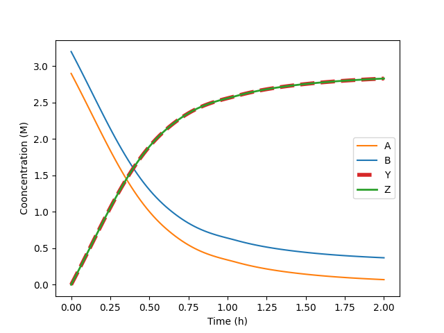
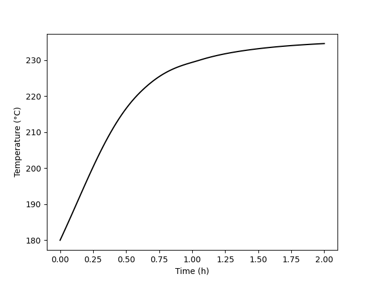
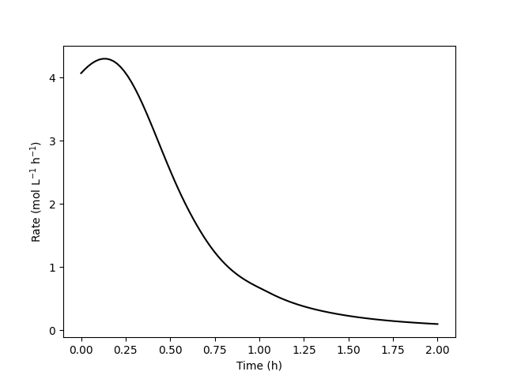
Summary
The concentrations of the reactants, A and B, decrease monotonically during the first two hours of operation while the concentrations of the products, Y and Z, increase. The temperature increases steadily, too. The variation of the reaction rate is different. Initially it increases, but then it passes through a maximum after which it steadily decreases.
Qualitative Analysis
A qualitative analysis shows that the variations in the concentrations, temperature and rate seen in Figures 13.3, 13.4, and 13.5 are expected. At \(t=0\), the concentrations of the reagents and the temperature are all at their initial values. At this point the rate has the corresponding value calculated using equations (8), (9), (10), and (2).
After a short interval of time, since the rate is positive, the concentrations of A and B will have decreased slightly and the concentration of Y and Z will have increased slightly due to the occurrence of the reaction. Because the reaction is exothermic and the reactor operates adiabatically, the temperature will have increased due to the heat released by the reaction. The rate could either increase or decrease during this short interval. The concentrations of the reactants, A and B, are decreasing, and this alone would cause the rate to decrease. However, at the same time the temperature is increasing, and that alone would cause the rate to increase. Generally the exponential dependence of the rate upon the temperature will be stronger than its dependence upon the reactant concentrations, and the rate will increase. This is seen to be the case in Figure 13.5. (Had the heat of reaction been very small, leading to a small increase in the temperature, it is possible that the rate would have decreased, especially if the activation was also small).
During that initial short interval of time, the concentrations of Y and Z, the temperature, and the rate all have positive slopes while the concentrations of A and B have negative slopes. During the next short interval of time, the rate is larger than during the first interval of time. As a consequence, the concentrations and temperature will change more during the second interval. Thus, the curvature of temperature, Y concentration, and Z concentration profiles is initially concave upward and the curvature of the A and B concentration profiles is initially concave downward. Again during this interval, opposing effects are associated with the decreasing reactant concentrations and the increasing temperature.
The initial curvature of the concentration and temperature profiles is very slight and can’t really be discerned in Figure 13.3 and Figure 13.4. Nonetheless, the initial curvature must change at some later time. Initially the concentrations of A and B are decreasing faster and faster and the concentrations of Y and Z and the temperature are increasing faster and faster. These trends cannot continue indefinitely, if they did, \(C_Y\), \(C_Z\), and \(T\) would approach positive infinity and \(C_A\) and \(C_B\) would approach negative infinity.
In fact, the curvature does change because at some point the effect of decreasing reactant concentrations upon the rate becomes stronger than the effect of increasing temperature. At the point where the two effects become equal, the rate reaches a maximum. Beyond the maximum, the effect of decreasing reactant concentration dominates and the rate decreases. This is seen in Figure 13.5 where the instantaneous rate passes through a maximum.
At the point where the rate reaches its maximum value, the concentration and temperature profiles exhibit an inflection point. (Again, in this example this is very, very subtle and cannot be discerned in the figures.) Beyond that point, the \(C_Y\), \(C_Z\), and \(T\) profiles are concave downward and the \(C_A\) and \(C_B\) are concave upward. That is, the changes over time become smaller and smaller. This behavior can continue indefinitely. Eventually the concentrations and temperature will stop changing and become constant. In this example, A is the limiting reactant, and the reaction is irreversible, so the concentrations and temperature will become constant when \(C_A\) becomes equal to zero.
13.7.2 Parallel Reaction Selectivity in a Cooled BSTR with an Unknown Initial Temperature
A jacketed, 10 L BSTR is going to be used to process an aqueous solution of A and B. The reactor jacket is perfectly mixed with a volume of 1400 cm3, a heat transfer coefficient of 138 cal ft−2 min−1 K−1 and a heat transfer area of 1200 cm2. Cooling water at 40 °C flows into the jacket at a rate of 100 g min-1. Both the reacting fluid and the cooling water may be taken to have a density of 1 g cm−3 and a heat capacity of 1 cal g−1 K−1.
Solutions containing A, B, X, Y, and Z are ideal and there is no heat of mixing. The reactor will be charged by mixing two separate solutions, one containing only reagent A and the other containing only reagent B, giving a 10 L charge with initial concentrations of 5 mol A L-1 and 7 mol B L-1. Reactions (1) and (2) will occur in the reactor. The heat of reaction (1) is −16.7 kcal mol−1, and that for reaction (2) is −14.3 kcal mol−1. The rate expression for reaction (1) is given in equation (3) where the pre-exponential factor is 9.74 x 109 L mol−1 min−1 and the activation energy is 20.1 kcal mol−1. The rate expression for reaction (2) is given in equation (4) where the pre-exponential factor is 2.38 x 1013 min−1 and the activation energy is 25.3 kcal mol−1.
What initial temperature is needed in order to convert 45% of the A in 30 min, and with that initial temperature what will the final temperature, the outlet exchange fluid temperature, and selectivity of X to Z equal?
\[ A + B \rightarrow X + Y \tag{1} \]
\[ A \rightarrow Z \tag{2} \]
\[ r_1 = k_1C_AC_B \tag{3} \]
\[ r_2 = k_2C_A \tag{4} \]
Click Here to See What an Expert Might be Thinking at this Point
I know that this is an isolated reactor modeling assignment because it includes the following distinguishing characteristics.
- The system consists of one ideal reactor (a BSTR) and no other equipment.
- The assignment describes the reactor and how it is operated.
- The reactions taking place are known, and rate expressions are available for them.
- The quantities of interest are reactor parameters, reactor inputs, and/or reactor outputs.
I also know that completing an isolated reactor modeling assighment occurs in five basic steps.
- Summarize the information provided in the assignment.
- Formulate the solution mathematically.
- Implement the solution numerically.
- Execute the solution.
- Report and comment upon the results.
To summarize the information provided in the assignment I’ll read through the problem and extract the following information:
- Summarize the information provided in the assignment.
- Reactor type and operational mode
- Constant quantities
- Adjusted quantities
- Missing reactor input or process parameter and specified reactor response
- Quantities of interest
Information Provided in the Assignment
Reactor: BSTR with cooling
Given Constants: \(V\) = 10 L, \(V_{ex}\) = 1.4 L, \(U\) = 138 cal ft-2 min-1 K-1, \(A\) = 1200 cm2, \(T_{ex,in}\) = 40 °C, \(\dot{m}_{ex}\) = 100 g min-1, \(\rho\) = 1.0 g cm-3, \(\rho_{ex}\) = 1.0 g cm-3, \(\tilde{C}_p\) = 1.0 cal g-1 K-1, \(\tilde{C}_{p,ex}\) = 1.0 cal g-1 K-1, \(C_{A,0}\) = 5.0 M, \(C_{B,0}\) = 7.0 M, \(\Delta H_1\) = -16.7 kcal mol-1, \(\Delta H_2\) = -14.3 kcal mol-1, \(k_{0,1}\) = 9.74 x 109 L mol-1 min-1, \(E_1\) = 20.1 kcal mol-1, \(k_{0,2}\) = 2.38 x 1013 min-1, \(E_2\) = 25.3 kcal mol-1, and \(t_{rxn}\) = 30 min.
Click Here to See What an Expert Might be Thinking at this Point
As I read through the problem I happened to notice that one of the reactor inputs (the initial temperature) is not given. In fact it is one of the quantities of interest in the assighment. If an input is missing then an output or related response must be provided. In this case the conversion of A is specified. Having noticed this while reading the problem, I entered them here. If I hadn’t noticed these things, they would have become apparent as I formulated the solution mathematically, and I would have come back here at that point and added them.
Missing Reactor Input: \(T_0\)
Specified Response: \(f_A = 0.45\)
Quantities of Interest: \(T_0\), \(T\Big\vert_{t_{rxn}}\), \(T_{ex}\Big\vert_{t_{rxn}}\), and \(S_{X/Z}\Big\vert_{t_{rxn}}\).
Click Here to See What an Expert Might be Thinking at this Point
The second basic step for completing an isolated BSTR modeling assignment is to formulate the solution mathematically. From my reading of this chapter, I know, generally, how to do this.
- Formulate the solution mathematically.
- Choose, write and simplify the reactor design equations needed to model the reactor.
- Identify the independent variable and the dependent variables, and ensure that the number of dependent variables is equal to the number of reactor design equations.
- Specify the initial values and the stopping criterion, and write equations for calculating their values.
- Write equations to express every quantity appearing in the reactor design equations or in equations that will be substituted into the reactor design equations in terms of known constants, the independent variable, the dependent variables, the missing reactor input or process parameter (if there is one), and the adjusted quantities (if there are any).
- Write the equations to calculate every quantity of interest and the response that was specified in the assignment (if there is one) using the results from solving the reactor design equations, the independent variable, the dependent variables, the missing reactor input or process parameter (if there is one), and the adjusted quantities (if there are any).
- Briefly explain or outline the sequence of calculations that must be used to calculate and process the quantities of interest (and the response that was specified in the assignment, if there is one).
Mathematical Formulation of the Solution
Click Here to See What an Expert Might be Thinking at this Point
Mole balances are always included in the design equations, and for a BSTR the mole balance is given by Equation 6.8. In this system, there are two reactions taking place, so the summation expands to two terms.
\[ \frac{dn_i}{dt} = V \sum_j \nu_{i,j}r_j = \nu_{i,1}r_1V + \nu_{i,2}r_2V \]
The BSTR is not isothermal, so an energy balance on the reacting fluid, Equation 6.9, is required. There are no shafts or moving boundaries (other than the agitator which is assumed to do negligible work), so the rate of doing work, \(\dot{W}\), is zero. The reacting fluid is a liquid, so the pressure is constant and its time-derivative is zero. Assuming it to be an incompressible ideal mixture means that the volume also is constant, and the time-derivative of the volume is equal to zero. The assignment provides a mass-specific heat capacity, so the sensible heat term can be written in terms of that instead of molar heat capacities. Since there are two reactions, the final summation expands to two terms.
\[ \cancelto{\rho V \tilde{C}_p}{\left(\sum_i n_i \hat C_{p,i} \right)} \frac{dT}{dt} - \cancelto{0}{V\frac{dP}{dt}} - \cancelto{0}{P \frac{dV}{dt}} = \dot Q - \cancelto{0}{\dot W} - V \cancelto{\left(r_1 \Delta H_1 + r_2 \Delta H_2\right)}{\sum_j \left(r_j \Delta H_j \right)} \]
\[ \rho V \tilde{C}_p \frac{dT}{dt} = \dot Q - V \left(r_1 \Delta H_1 + r_2 \Delta H_2\right) \]
The reactor is cooled with chilled water which gains sensible heat from the reacting fluid, so an energy balance on that exchange fluid is necessary and is given by Equation 6.2.
\[ \rho_{ex} V_{ex} \tilde C_{p,ex}\frac{dT_{ex}}{dt} = -\dot Q - \dot m_{ex} \int_{T_{ex,in}}^{T_{ex}} \tilde C_{p,ex}dT \]
The exchange fluid heat capacity is constant, making the evaluation of the integral trivial.
\[ \dot m_{ex}\int_{T_{ex,in}}^{T_{ex}} \tilde C_{p,ex}dT \Rightarrow \dot m_{ex}\tilde C_{p,ex}\left( T_{ex} - T_{ex,in} \right) \]
Momentum balances are not used with BSTRS so the full set of design equations consists of mole balances on each of the reagents, A, B, X, Y, and Z, an energy balance on the reacting fluid, and an energy balance on the exchange fluid.
Reactor Design Equations
Mole balance design equations for A, B, X, Y, and Z are presented in equations (5) through (9). An energy balance on the reacting fluid is given by equation (10), and an energy balance on the exchange fluid is given by equation (11).
\[ \frac{dn_A}{dt} = \left(-r_1 -r_2 \right)V \tag{5} \]
\[ \frac{dn_B}{dt} = -r_1 V \tag{6} \]
\[ \frac{dn_X}{dt} = r_1 V \tag{7} \]
\[ \frac{dn_Y}{dt} = r_1 V \tag{8} \]
\[ \frac{dn_Z}{dt} = r_2 V \tag{9} \]
\[ \frac{dT}{dt} = \frac{\dot Q - V \left(r_1 \Delta H_1 + r_2 \Delta H_2\right)}{\tilde{C}_p \rho V} \tag{10} \]
\[ \frac{dT_{ex}}{dt} = \frac{-\dot Q - \dot m_{ex} \tilde C_{p,ex}\left(T_{ex} - T_{ex,in}\right)}{\rho_{ex} V_{ex} \tilde C_{p,ex}} \tag{11} \]
Click Here to See What an Expert Might be Thinking at this Point
The reactor design equations are a set of seven IVODEs. The independent variable is \(t\) and the dependent variables are \(n_A\), \(n_B\), \(n_X\), \(n_Y\), \(n_Z\), \(T\), and \(T_{ex}\). There are seven IVODEs and seven dependent variables, so no other IVODEs are needed. However, initial values and a stopping criterion are needed in order to solve IVODEs.
The instant the fluids are mixed in the reactor can be defined as \(t=0\). The values of each of the dependent variables at \(t=0\) must then be used as the initial values for solving the IVODEs The solutions used to charge it contain only A and B; \(n_{A,0}\) and \(n_{B,0}\) can be used to represent the initial molar amounts of A and B. The initial molar amounts of A and B, \(n_{A,0}\) and \(n_{B,0}\), are not given, but they can be calculated from their initial concentrations and the reactor volume, which are given. The initial molar amounts of X, Y, and Z are zero. The reacting fluid temperature at \(t=0\) is unknown, but \(T_0\) can be used to represent it.
Had I not noticed this when I was summarizing the information provided in the assignment, it would be apparent at this point that a necessary reactor input is missing, and I would have gone back to the information summary and added \(T_0\) as a missing reactor input. If one of the inputs is missing, then the problem has to specify a reactor output or a response related to one. If it didn’t, there would be too many unknowns (or too few equations) and the assignment couldn’t be completed. Knowing this, I’d have gone through the assignment again looking for a specified output or response. At that point I would see that the assignment specifies the conversion of A and I’d have added it to the information summary.
Returning to the initial values, I still need an initial value for \(T_{ex}\). Notice that \(T_{ex}\) is the outlet temperature of the exchange fluid, so the necessary initial value is the temperature of the exchange fluid leaving the reactor at \(t=0\). The assignment does not mention the initial outlet temperature of the exchange fluid \(T_{ex,0}\). It only specifies the constant inlet temperature of the exchange fluid. I will assume that the cooling water is flowing before the reagents are added to the reactor, so at the instant they are added, the outlet exchange fluid temperature equals the inlet exchange fluid temperature, \(T_{ex,in}\).
I also need a stopping criterion. This assignment actually provides two pieces of information I could use as a stopping criterion. The assignment is to find responses after a reaction time, \(t_{rxn}\), of 30 min, so that could be used as the stopping criterion. It also specifies the final conversion of A. I could use that to calculate the final molar amount of A and use that as the stopping criterion. When the final value of the independent value is specified, I prefer to use that as the stopping criterion, so I’ll use \(t=t_{txn}\) as the stopping criterion. (The problem can be solved using either stopping criterion).
The initial values and stopping criterion needed for solving the design equations are given in Table 13.2. The initial molar amounts of A and B shown in the table can be calculated using equations (12) and (13).
| Variable | Initial Value | Stopping Criterion |
|---|---|---|
| \(t\) | \(0\) | \(t_{rxn}\) |
| \(n_A\) | \(n_{A,0}\) | |
| \(n_B\) | \(n_{B,0}\) | |
| \(n_X\) | \(0\) | |
| \(n_Y\) | \(0\) | |
| \(n_Z\) | \(0\) | |
| \(T\) | \(T_0\) | |
| \(T_{ex}\) | \(T_{ex,0} = T_{ex,in}\) |
\[ n_{A,0} = C_{A,0}V \tag{12} \]
\[ n_{B,0} = C_{B,0}V \tag{13} \]
Click Here to See What an Expert Might be Thinking at this Point
The design equations cannot be solved until every quantity appearing in them and every quantity substituted into them is expressed in terms of known constants, the independent variable the dependent variables, and, in this case, the missing reactor input, \(T_0\). The only quantities appearing in equations (5) through (11) that aren’t a known constant, the independent variable, a dependent variable, or \(T_0\) are \(r_1\), \(r_2\), and \(\dot{Q}\).
Equations (3) and (4) can be used to eliminate \(r_1\) and \(r_2\) from the design equations, but that introduces \(k_1\), \(k_2\), \(C_A\), and \(C_B\). The rate coefficients can be expressed in terms of \(T\) and known constants using the Arrhenius expression, Equation 4.8. The concentrations of A and B can be expressed in terms of \(n_A\), \(n_B\), and known constants using the defining equation for concentration.
The rate of heat transfer, \(\dot{Q}%\) can be expressed in terms of the constant heat transfer area and heat transfer coefficient and the reacting fluid and exchange fluid temperatures (which are dependent variables) using Equation 6.18.
Ancillary Equations for Solving the Reactor Design Equations
\[ k_1 = k_{0,1}\exp{\left( \frac{-E_1}{RT} \right) } \tag{14} \]
\[ k_2 = k_{0,2}\exp{\left( \frac{-E_2}{RT} \right) } \tag{15} \]
\[ C_A = \frac{n_A}{V} \tag{16} \]
\[ C_B = \frac{n_B}{V} \tag{17} \]
\[ \dot{Q} = UA\left(T_{ex} - T \right) \tag{18} \]
Click Here to See What an Expert Might be Thinking at this Point
Given the value of the missing reactor input, namely the initial temperature, \(T_0\), the design equations can be solved for \(n_A\left(t\right)\), \(n_B\left(t\right)\), \(n_X\left(t\right)\), \(n_Y\left(t\right)\), \(n_Z\left(t\right)\), \(T\left(t\right)\), and \(T_{ex}\left(t\right)\). In this assignment, only the values corresponding to \(t=t_{rxn}\) are of interest. In addition to the missing reactor input, the quantities of interest in the assignment are the reacting fluid temperature, \(T\Big\vert_{t_{rxn}}\), the exchange fluid temperature, \(T_{ex}\Big\vert_{t_{rxn}}\), and the selectivity for X over Z, \(S_{X/Z}\Big\vert_{t_{rxn}}\). The first two are found directly by solving the reactor design equations. The selectivity is found using its definition, Equation 3.17.
When the design equations are IVODEs and there is a missing reactor input, it will be necessary to calculate the specified response using the results from solving the design equations. The reason for this will be seen below. In this assignment the conversion of A is specified. It can be calculated using its definition, Equation 3.4.
Ancillary Equations for Calculating the Quantities of Interest and the Specified Response
\[ S_{X/Z} \Big\vert_{t=t_{rxn}} = \frac{n_X \Big\vert_{t=t_{rxn}}}{n_Z \Big\vert_{t=t_{rxn}}} \tag{19} \]
\[ f_A \Big\vert_{t=t_{rxn}} = \frac{n_{A,0} - n_A \Big\vert_{t=t_{rxn}}}{n_{A,0}} \tag{20} \]
Sequence of Calculations to Complete the Assignment
- Substitute given and known constants into all equations.
- Substitute equations (14), (16), and (17) into equation (3).
- Substitute equations (15) and (16) into equation (4).
- Substitute equations (3), (4), and (18) into equations (5) through (11).
- Calculate \(n_{A,0}\) and \(n_{B,0}\) using equations (8) and (9).
- Calculate \(T_0\) by
- guessing a value for \(T_0\),
- Solving equations (5) through (11) using the initial values and stopping criterion in Table 13.2 to get the final values of \(n_A\), \(n_B\), \(n_X\), \(n_Y\), \(n_Z\), \(T\), and \(T_{ex}\),
- Calculating the conversion of A using the results and equation (20),
- Checking whether the calculated conversion is equal to the value specified in the assignment, and
- Repeating steps 6a through 6d until the guessed value of \(T_0\) results in a calculated conversion that equals the specified conversion. That final guessed value is the initial temperature.
- Knowing the initial temperature, \(T_0\), use it to solve equations (5) through (11) using the initial values and stopping criterion in Table 13.2 to get \(n_A\left(t\right)\), \(n_B\left(t\right)\), \(n_X\left(t\right)\), \(n_Y\left(t\right)\), \(n_Z\left(t\right)\), \(T\left(t\right)\), and \(T_{ex}\left(t\right)\).
- Use the results to find \(T\Big\vert_{t_{rxn}}\) and \(T_{ex}\Big\vert_{t_{rxn}}\), and then use equation (19) to calculate \(S_{X/Z}\Big\vert_{t_{rxn}}\).
Click Here to See What an Expert Might be Thinking at this Point
Having formulated the solution mathematically, the third basic step for completing an isolated reactor modeling assignment is to implement the solution numerically. I know that this will entail creating two computer functions.
- Implement the solution numerically.
- Create a response function.
- Pass the missing value (if there is one) and the adjusted values (if there are any) to it as arguments.
- Solve the reactor design equations for each set of adjusted values.
- Calculate and return the quantities of interest (and the specified response if there is one) corresponding to each set of adjusted values.
- Create a calculations function.
- Perform the sequence of calculations that is needed to calculate the quantities of interest, calling or using the response function as needed.
- Process the quantities of interest as necessary to complete the assignment.
- Create a response function.
Numerical Implementation of the Solution
Click Here to See What an Expert Might be Thinking at this Point
I know that when the design equations are IVODEs and one reactor input or process parameter is missing, the response function serves two purposes. The first is to calculate the value of the specified response given a value for the missing reactor input or process parameter. To do this, the response function must accept the missing value as an argument and it must return the corresponding value of the specified response. The second purpose of the response function is to calculate and return the quantities of interest. In this assignment there aren’t any adjusted quantities, so there won’t be an adjusted value argment passed to the response function.
When IVODEs are solved numerically, analytic expressions for the dependent variables as functions of the dependent variables (e. g. \(n_A\left(t\right)\)) are not obtained. Instead the solution takes the form of a vector containing values of the independent variable and vectors containing corresponding values of the dependent variables. In this assignment, the quantities of interest will be the final values in each vector because they correspond to \(t=t_{rxn}\).
The response function will receive a value for \(T_0\). It first must complete the first five steps in the sequence given above. Next it must complete steps 6b, 6c, and 8. Finally, it must return \(T\Big\vert_{t_{rxn}}\), \(T_{ex}\Big\vert_{t_{rxn}}\), and \(S_{X/Z}\Big\vert_{t_{rxn}}\).
Response Function
The response function is created with the following structure:
- It accepts one argument which it uses as the missing reactor input, \(T_0\).
- It begins by defining variables that hold the known and given constants.
- It next calculates \(n_{A,0}\) and \(n_{B,0}\) using equations (12) and (13).
- In preparation for solving the IVODEs, it defines a function to evaluate \(\frac{dn_A}{dt}\), \(\frac{dn_B}{dt}\), \(\frac{dn_X}{dt}\), \(\frac{dn_Y}{dt}\), \(\frac{dn_Z}{dt}\), \(\frac{dT}{dt}\), and \(\frac{dT_{ex}}{dt}\) using equations (5) through (11). That function
- receives values for \(t\), \(n_A\), \(n_B\), \(n_X\), \(n_Y\), \(n_Z\), \(T\), and \(T_{ex}\),
- calculates \(k_1\), \(k_2\), \(C_A\), \(C_B\), and \(\dot{Q}\) using equations (14) through (18),
- calculates \(r_1\) and \(r_2\) using equations (3) and (4), and
- calculates and returns \(\frac{dn_A}{dt}\), \(\frac{dn_B}{dt}\), \(\frac{dn_X}{dt}\), \(\frac{dn_Y}{dt}\), \(\frac{dn_Z}{dt}\), \(\frac{dT}{dt}\), and \(\frac{dT_{ex}}{dt}\) using equations (5) through (11).
- The response function next calls an IVODE solver to solve equations (5) through (11) and get values for the final values of \(n_A\), \(n_B\), \(n_X\), \(n_Y\), \(n_Z\), \(T\), and \(T_{ex}\), passing the function above and the initial values and stopping criterion in Table 13.2 as arguments.
- It calculates \(S_{X/Z}\Big\vert_{t_{rxn}}\) and \(f_A\Big\vert_{t_{rxn}}\) using the results from the IVODE solver and equations (19) and (20).
- Finally, it returns \(T\Big\vert_{t_{rxn}}\), \(T_{ex}\Big\vert_{t_{rxn}}\), \(S_{X/Z}\Big\vert_{t_{rxn}}\) and \(f_A\Big\vert_{t_{rxn}}\).
Click Here to See What an Expert Might be Thinking at this Point
The calculations function is responsible for performing the entire sequence of calculations listed at the end of the mathematical formulation. The first thing it needs to do is calculate \(T_0\) as described in step 6 of the calculation sequence. However, it is not necessary to use trial and error to do so. Instead, the response function can be used in an ATE as described in Chapter 12. That ATE can then be solved for \(T_0\) using an ATE solver.
After \(T_0\) is found, the response function can be called directly, passing the result as the missing value argument. The response function will then return the remaining quantities of interest.
Calculations Function
Let \(x\) represent the missing input argument passed to the residual function, \(\Omega \left(x\right)\) represent the fractional conversion of A that the residual function returns, and \(f_{A,spec}\) represent the fractional conversion of A specified in the assignment. A residual function, \(\epsilon \left(x\right)\), can be defined as shown in equation (21). Clearly, when \(x\) is equal to \(T_0\), \(\Omega \left(x\right)\) will equal \(f_{A,spec}\), and \(\epsilon \left(x\right)\) will equal zero.
\[ \epsilon \left(x\right) = \Omega \left(x\right) - f_{A,spec} \tag{21} \]
The calculations function is created with the following structure:
- It does not accept any arguments.
- In preparation for finding \(T_0\), it defines a function that accepts \(x\) as an argument, evaluates \(\epsilon \left(x\right)\) using equation (21), and returning the result.
- It calls an ATE solver to find the value of \(T_0\), passing the function above and a guess for \(T_0\) as arguments.
- It calls the response function, passing \(T_0\) as the missing value argument, to get the remaining quantities of interest: \(T\Big\vert_{t_{rxn}}\), \(T_{ex}\Big\vert_{t_{rxn}}\), and \(S_{X/Z}\Big\vert_{t_{rxn}}\).
- It reports \(T_0\) and the final values of \(T\), \(T_{ex}\), \(S_{X/Z}\).
- It saves the results to a file.
Performing the Calculations
After creating the response function and calculations function as described, all of the calculations needed to complete the assignment can be performed by executing the calculations function.
Results
The calculations were performed as described above, yielding the results shown in Table 13.3.
Summary and Comments
An initial temperature of 65 °C is required to reach a conversion of 45% in 30 min. At that time, the temperature of the reacting fluid will be 92.4 °C, the exit temperature of the exchange fluid will be 68.2 °C, and the selectivity will equal 4.21 mol X per mol Z.
Note
This example specified the reaction time and the fractional conversion. In the solution presented above, the reaction time was used as the stopping criterion when solving the IVODEs and the fractional conversion was used as the so-called specified output. That is, the IVODEs were solved with varying values of \(T_0\) until a value of \(T_0\) that resulted in the specified conversion was found.
The roles of the reaction time and conversion could have been reversed when solving for \(T_0\). That is, the specified conversion could have been used to calculate the final moles of A, and the final moles of A could have been used as the stopping criterion and the reaction time as the specified response. Then the IVODEs would have been solved with varying values of \(T_0\) until a value of \(T_0\) that resulted in the specified reaction time was found.
Note
In both Example 13.7.1 and Example 13.7.2 the reactor design equations are IVODEs. In addition, both examples involve response tasks. That is, the assignment provides all of the information needed to solve the reactor design equations. They differ in that Example 13.7.1 provides all of the reactor inputs and process parameters and requests only reactor outputs and responses. When that is the case, it is straightforward to solve the IVODEs numerically.
In contrast, Example 13.7.2 specifies the value of an output (the conversion) and requests the value of a reactor input. That complicates the numerical solution of the IVODEs slightly. Specifically, IVODEs can only be solved numerically for the values of the dependent variables. They cannot be solved directly for an initial value. To get around this numerical limitation, it was necessary to create a residual equation, equation (21), and first solve it to find the initial value. It still was necessary to solve the IVODEs within that residual function, but at that point a guess for the missing initial value was available and the IVODEs could be solved numerically. Upon solving the residual equation the initial value was known and the IVODEs could be solved numerically.
13.7.3 Maximum Intermediate Yield in Series Reactions
A BSTR will be charged with 1 atm of A and 2 atm of B at 25 °C. The reactor volume is 2 L, and it has a jacket with an area of 600 cm2 and an overall heat transfer coefficient of 0.6 cal cm-2 min-1 K-1. The temperature of the coolant in the perfectly-mixed jacket is constant and equal to 30°C. Gas phase reactions (1) and (2) take place within the reactor; the corresponding rate expressions are given in equations (3) and (4). The rate coefficients display Arrhenius temperature dependence with pre-exponental factors of 3.34 x 109 and 4.99 x 109 mol cm-3 min-1 atm-2 for reactions (1) and (2), respectively, and activation energies of 20.5 and 21.8 kcal mol-1. The heat of reaction (1) is constant and equal to -6,300 cal mol-1; that of reaction (2) is constant and equal to -6,900 cal mol-1. The heat capacities of A, B, D, Z and U are constant and equal to 7.4, 8.6, 10.7, 5.2 and 10.3 cal mol-1 K-1, respectively.
What reaction time will maximize the yield (moles of D per initial mole of A), and what will the yield and the conversion of A equal at that reaction time?
\[ A + B \rightarrow D + Z \tag{1} \]
\[ D + B \rightarrow U + Z \tag{2} \]
\[ r_1 = k_{0,1} \exp{\left(\frac{-E_1}{RT}\right)}P_AP_B \tag{3} \]
\[ r_2 = k_{0,2} \exp{\left(\frac{-E_2}{RT}\right)}P_DP_B \tag{4} \]
Click Here to See What an Expert Might be Thinking at this Point
This assignment describes a single BSTR and no other reactors, heat exchangers, or stream mixing/splitting points. It describes the reactor, its operation, and the reactions taking place, including the rate expressions. It asks me to find a reaction time to maximize yield. From these characteristics, I know that this is an isolated reactor modeling assignment. I know the general approach to completing an isolated reactor modeling assignment that was described in Chapter 12 has five basic steps.
- Summarize the information provided in the assignment.
- Formulate the solution mathematically.
- Implement the solution numerically.
- Execute the solution.
- Report and comment upon the results.
To summarize the information provided in the assignment I’ll read through the problem and extract the following information:
- Summarize the information provided in the assignment.
- Reactor type and operational mode
- Constant quantities
- Adjusted quantities
- Missing reactor input or process parameter and specified reactor response
- Quantities of interest
Information Provided in the Assignment
Reactor: BSTR with heat transfer
Given Constants: \(P_{A,0}\) = 1 atm, \(P_{B,0}\) = 2 atm, \(T_0\) = 25 °C, \(V\) = 2 L, \(A\) = 600 cm2, \(U\) = 0.6 cal cm-2 min-1 K-1, \(T_{ex}\) = 30 °C, \(k_{0,1}\) = 3.34 x 109 mol cm-3 min-1 atm-2, \(k_{0,2}\) = 4.99 x 109 mol cm-3 min-1 atm-2, \(E_1\) = 20.5 kcal mol-1, \(E_2\) = 21.8 kcal mol-1, \(\Delta H_1\) = -6,300 cal mol-1, \(\Delta H_2\) = -6,900 cal mol-1, \(\hat C_{p,A}\) = 7.4 cal mol-1 K-1, \(\hat C_{p,B}\) = 8.6 cal mol-1 K-1, \(\hat C_{p,D}\) = 10.7 cal mol-1 K-1, \(\hat C_{p,Z}\) = 5.2 cal mol-1 K-1 and \(\hat C_{p,U}\) = 10.3 cal mol-1 K-1.
Quantities of Interest: \(t_{rxn,opt} = \underset{t}{\arg\max} \left(Y_{D/A}\right)\), \(\underset{t}\max \left(Y_{D/A}\right)\), and \(f_A\Big\vert_{t_{rxn,opt}}\).
Click Here to See What an Expert Might be Thinking at this Point
The second basic step for completing an isolated BSTR modeling assignment is to formulate the solution mathematically. From my reading of this chapter, I know, generally, how to do this.
- Formulate the solution mathematically.
- Choose, write and simplify the reactor design equations needed to model the reactor.
- Identify the independent variable and the dependent variables, and ensure that the number of dependent variables is equal to the number of reactor design equations.
- Specify the initial values and the stopping criterion, and write equations for calculating their values.
- Write equations to express every quantity appearing in the reactor design equations or in equations that will be substituted into the reactor design equations in terms of known constants, the independent variable, the dependent variables, the missing reactor input or process parameter (if there is one), and the adjusted quantities (if there are any).
- Write the equations to calculate every quantity of interest and the response that was specified in the assignment (if there is one) using the results from solving the reactor design equations, the independent variable, the dependent variables, the missing reactor input or process parameter (if there is one), and the adjusted quantities (if there are any).
- Briefly explain or outline the sequence of calculations that must be used to calculate and process the quantities of interest (and the response that was specified in the assignment, if there is one).
Mathematical Formulation of the Solution
Click Here to See What an Expert Might be Thinking at this Point
Mole balances are always included in the reactor design equations. The general BSTR mole balance is given in Equation 6.8. I will use this equation to write mole balances for every reagent in the system. That is, I’ll write the mole balance for \(i\) = A, B, D, Z, and U. There are two reactions taking place, so the sum will expand to two terms in each mole balance.
\[ \frac{dn_i}{dt} = V \sum_j \nu_{i,j}r_j = \left( \nu_{i,1}r_1 + \nu_{i,2}r_2 \right)V \]
This reactor is not isothermal, so I will need to include a BSTR reacting fluid energy balance among the reactor design equations. The BSTR energy balance is given in Equation 6.9. This reactor has rigid walls and no moving boundaries, so it’s volume is constant. If the volume is constant, the time-derivative of the volume is equal to zero. Being a gas phase system with a constant volume, the pressure is expected to change because the temperature will change. Therefore I cannot set the time-derivative of the pressure equal to zero. With no moving boundaries, the only work is that of the agitator, which is assumed to be negligible. The summation over \(i\) includes every reagent, and as above, the summation over \(j\) expands to two terms.
\[ \left(\sum_i n_i \hat C_{p,i} \right) \frac{dT}{dt} - V\frac{dP}{dt} - P \cancelto{0}{\frac{dV}{dt}} = \dot Q - \cancelto{0}{\dot W} - V \cancelto{\left( r_1 \Delta H_1 + r_2 \Delta H_2\right)}{\sum_j \left(r_j \Delta H_j \right)} \]
\[ \left( n_A \hat C_{p,A} + n_B \hat C_{p,B} + n_D \hat C_{p,D} + n_Z \hat C_{p,Z} + n_U \hat C_{p,U} \right) \frac{dT}{dt} - V\frac{dP}{dt} = \dot Q - \left( r_1 \Delta H_1 + r_2 \Delta H_2\right)V \]
An exchange fluid is present in this reactor, but the assignment states that its temperature is constant at 30 °C. Knowing the exchange fluid temperature, the other reactor design equations can be solved independently of an energy balance on the exchange fluid, so I do not need to include an energy balance on the exchange fluid among the reactor design equations.
Reactor Design Equations
Mole balances of each of the reagents are presented in equations (5) through (9), and an energy balance on the reacting fluid is presented in equation (10).
\[ \frac{dn_A}{dt} = -r_1V \tag{5} \]
\[ \frac{dn_B}{dt} = \left( -r_1 - r_2 \right)V \tag{6} \]
\[ \frac{dn_D}{dt} = \left( r_1 - r_2 \right)V \tag{7} \]
\[ \frac{dn_Z}{dt} = \left( r_1 + r_2 \right)V \tag{8} \]
\[ \frac{dn_U}{dt} = r_2V \tag{9} \]
\[ \begin{aligned} - V\frac{dP}{dt} + &\left( n_A \hat C_{p,A} + n_B \hat C_{p,B} + n_D \hat C_{p,D} + n_Z \hat C_{p,Z} + n_U \hat C_{p,U} \right) \frac{dT}{dt} \\&= \dot Q - \left( r_1 \Delta H_1 + r_2 \Delta H_2\right)V \end{aligned} \tag{10} \]
Click Here to See What an Expert Might be Thinking at this Point
At this point I have 6 initial value ordinary differential equations (IVODEs) that contain 7 dependent variables (\(n_A\), \(n_B\), \(n_D\), \(n_Z\), \(n_U\), \(P\), and \(T\)). I either need to eliminate a dependent variable or add an IVODE before I can solve the reactor design equations.
Noting that V is constant, I’m going to take the time-derivative of the ideal gas law and use it as an additional IVODE.
\[ PV - \left(n_A + n_B + n_D + n_Z + n_U \right)RT =0 \]
\[ \begin{aligned} V\frac{dP}{dt} &- RT\left(\frac{dn_A}{dt} + \frac{n_B}{dt} + \frac{n_D}{dt} + \frac{n_Z}{dt} + \frac{n_U}{dt} \right) \\&- R\left(n_A + n_B + n_D + n_Z + n_U \right)\frac{dT}{dt} = 0 \end{aligned} \]
Taking the derivative of the ideal gas law yields equation (11).
\[ \begin{aligned} - &RT\left(\frac{dn_A}{dt} + \frac{n_B}{dt} + \frac{n_D}{dt} + \frac{n_Z}{dt} + \frac{n_U}{dt} \right) + V\frac{dP}{dt} \\&- R\left(n_A + n_B + n_D + n_Z + n_U \right)\frac{dT}{dt} = 0 \end{aligned}\tag{11} \]
Click Here to See What an Expert Might be Thinking at this Point
I now have 7 IVODEs with 7 dependent variables. Initial values and a stopping criterion are needed in order to solve these equations. I can define \(t=0\) to be instant that the A and B are added to the reactor, and let \(n_{A,0}\), \(n_{B,0}\), \(P_0\), and \(T_0\) represent the molar amounts of A and B, the pressure, and the temperature at that instant. The initial molar amounts of A and B are not given, but their initial partial pressures are. Consequently, the initial molar amounts of A and B can be calculated using the ideal gas law. Initially the reactor does not contain D, Z, or U, so the initial molar amounts of those reagents are equal to zero. The initial temperature is given and the initial pressure can be calculated using the initial partial pressures of the reagents given in the assignment.
The assignment asks for the reaction time that will maximize the yield, so I need to vary the reaction time over a range of values, as indicated in the information summary. Because the reaction time is the independent variable, I do not need to solve the design equations many times using different values of the reaction time. Instead, I can set the reaction time to a large value and use it as the stopping criterion, \(t=t_{rxn}\). Solving the design equations will yield \(n_A\left(t\right)\), \(n_B\left(t\right)\), \(n_D\left(t\right)\), \(n_Z\left(t\right)\), \(n_U\left(t\right)\), \(P\left(t\right)\), and \(T\left(t\right)\), from which I can calculate \(Y_{D/A}\left(t\right)\) (see below). If the yield does not exhibit a maximum at times between \(t=0\) and \(t=t_{rxn}\), I’ll need to set the reaction time to a larger value and repeat the calculations.
The initial values and stopping criterion for solving equations (5) through (11) are presented in Table 13.4. The initial molar amounts of A and B can be calculated using equations (12) and (13), and the initial total pressure is the sum of the initial partial pressures, equation (14). The reaction time needs to be adjusted to find the time that maximizes the yield. Consequently, a value can be chosen for \(t_{rxn}\). Doing so will yield results that span times from zero to the chosen value when the equations are solved numerically.
| Variable | Initial Value | Stopping Criterion |
|---|---|---|
| \(t\) | \(0\) | \(t_{rxn}\) |
| \(n_A\) | \(n_{A,0}\) | |
| \(n_B\) | \(n_{B,0}\) | |
| \(n_D\) | \(0\) | |
| \(n_Z\) | \(0\) | |
| \(n_U\) | \(0\) | |
| \(P\) | \(P_0\) | |
| \(T\) | \(T_0\) |
\[ n_{A,0} = \frac{P_{A,0}V}{RT} \tag{12} \]
\[ n_{B,0} = \frac{P_{B,0}V}{RT} \tag{13} \]
\[ P_0 = P_{A,0} + P_{B,0} \tag{14} \]
Click Here to See What an Expert Might be Thinking at this Point
The design equations cannot be solved until every quantity appearing in them and every quantity substituted into them is expressed in terms of known constants, the independent variable and the dependent variables. Looking at the quantities in the IVODEs, \(V\), \(\hat C_{p,A}\), \(\hat C_{p,B}\), \(\hat C_{p,D}\), \(\hat C_{p,Z}\), \(\hat C_{p,U}\), \(\Delta H_1\), \(\Delta H_2\), and the gas constant, \(R\), are known constants. That leaves the reaction rates and the rate of heat transfer to be expressed in terms of known constants, the independent variable, \(t\), and the dependent variables, \(n_A\), \(n_B\), \(n_D\), \(n_Z\), \(n_U\), \(T\), and \(P\).
The reaction rates are given by equations (3) and (4). Substituting the rate expressions into the reactor design equations introduces the known constants, \(k_{0,1}\), \(k_{0,2}\), \(E_1\), and \(E_2\), along with the partial pressures of A, B, and D. The partial pressures can be calculated using the ideal gas law.
The rate of heat transfer, \(\dot{Q}\), can be expressed in terms of \(T\) and the known, constant heat transfer coefficient, \(U\), heat transfer area, \(A\), and exchange fluid temperature, \(T_{ex}\), Equation 6.18.
Ancillary Equations for Solving the Reactor Design Equations
\[ P_A = \frac{n_ART}{V} \tag{15} \]
\[ P_B = \frac{n_BRT}{V} \tag{16} \]
\[ P_D = \frac{n_DRT}{V} \tag{17} \]
\[ \dot Q = UA\left( T_{ex} - T \right) \tag{18} \]
Click Here to See What an Expert Might be Thinking at this Point
With the information provided above, the design equations can be solved for \(n_A\left(t\right)\), \(n_B\left(t\right)\), \(n_D\left(t\right)\), \(n_Z\left(t\right)\), \(n_U\left(t\right)\), \(P\left(t\right)\), and \(T\left(t\right)\). The quantities of interest in the assignment are the reaction time that mazimizes the yield of D and the yield of D and the conversion of A at that reaction time. Using the results from solving the design equations, the yield and conversion as functions of time can be calculated using their definitions.
Ancillary Equations for Calculating the Quantities of Interest
\[ Y_{D/A} = \frac{n_D}{n_{A,0}} \tag{19} \]
\[ f_A=\frac{n_{A,0}-n_A}{n_{A,0}} \tag{20} \]
Sequence of Calculations to Complete the Assignment
- Choose a value for \(t_{rxn}\).
- Substitute given and known constants into all equations.
- Substitute equations (15) and (16) into equation (3).
- Substitute equations (16) and (17) into equation (4).
- Substitute equations (3), (4), and (18) into equations (5) through (11).
- Calculate \(n_{A,0}\), \(n_{B,0}\), and \(P_0\) using equations (12), (13), and (14).
- Solve equations (5) through (11) using the initial values and stopping criterion in Table 13.4 to get \(n_A\left(t\right)\), \(n_B\left(t\right)\), \(n_D\left(t\right)\), \(n_Z\left(t\right)\), \(n_U\left(t\right)\), \(P\left(t\right)\) and \(T\left(t\right)\) at reaction times between 0 and \(t_{rxn}\).
- Use the results to calculate \(Y_{D/A}\left(t\right)\) and \(f_A\left(t\right)\) using equations (19) and (20).
- Find \(\underset{t}\max \left(Y_{D/A}\right)\), \(t_{rxn,opt} = \underset{t}{\arg\max} \left(Y_{D/A}\right)\), and \(f_A\Big\vert_{t_{rxn,opt}}\).
- If \(Y_{D/A}\left(t\right)\) does not pass through a maximum between \(t=0\) and \(t=t_{rxn}\), repeat from step 1 using a larger value of \(t_{rxn}\).
- If there is a maximum between \(t=0\) and \(t=t_{rxn}\), \(\underset{t}\max \left(Y_{D/A}\right)\), \(t_{rxn,opt} = \underset{t}{\arg\max} \left(Y_{D/A}\right)\), and \(f_A\Big\vert_{t_{rxn,opt}}\) are the quantities of interest.
Click Here to See What an Expert Might be Thinking at this Point
Having formulated the solution mathematically, the third basic step for completing an isolated reactor modeling assignment is to implement the solution numerically. I know that this will entail creating two computer functions.
- Implement the solution numerically.
- Create a response function.
- Pass the missing value (if there is one) and the adjusted values (if there are any) to it as arguments.
- Solve the reactor design equations for each set of adjusted values.
- Calculate and return the quantities of interest (and the specified response if there is one) corresponding to each set of adjusted values.
- Create a calculations function.
- Perform the sequence of calculations that is needed to calculate the quantities of interest, calling or using the response function as needed.
- Process the quantities of interest as necessary to complete the assignment.
- Create a response function.
Numerical Implementation of the Solution
Click Here to See What an Expert Might be Thinking at this Point
I know that the purpose of the response function is to calculate the quantities of interest. In this assignment there isn’t a missing reactor input or process parameter. That means that the response function will not have a missing value argument.
There is an adjusted value, namely \(t\). However, in this assignment I do not need to pass a range of values of \(t\) to the response function. I can simply pass a value for \(t_{rxn}\) because the IVODE solver will generate a range of values between \(t = 0\) and \(t=t_{rxn}\) as it solves the IVODEs.
The response function must complete steps 2 through 8 in the sequence given above and then return a vector containing the range of values of \(t\) and vectors containing the correponding values of \(Y_{D/A}\) and \(f_A\).
Response Function
Click Here to See What an Expert Might be Thinking at this Point
I know that in order to solve the design equations numerically I will need to calculate the values of the derivatives, \(\frac{dn_A}{dt}\), \(\frac{dn_B}{dt}\), \(\frac{dn_D}{dt}\), \(\frac{dn_Z}{dt}\), \(\frac{dn_U}{dt}\), \(\frac{dP}{dt}\), and \(\frac{dT}{dt}\), given values of the independent variable and the dependent variables. I can do that either of two ways as described in Appendix I. One way is to algebraically manipulate equations (5) through (11) to put them in the form of a vector equation, Equations I.12 through I.15. The other way is to write them in the form of a matrix equation, Equation I.19. Here I will write the IVODEs as a matrix equation.
The design equations can be written as the matrix equation, (21), where the mass matrix, \(\boldsymbol{M}\), is defined as shown in equation (22). The values of the derivatives, \(\frac{dn_A}{dt}\), \(\frac{dn_B}{dt}\), \(\frac{dn_D}{dt}\), \(\frac{dn_Z}{dt}\), \(\frac{dn_U}{dt}\), \(\frac{dP}{dt}\), and \(\frac{dT}{dt}\), then can be calculated using equation (23).
\[ \boldsymbol{M} \frac{d}{dt}\begin{bmatrix} \frac{dn_A}{dt} \\ \frac{dn_B}{dt} \\ \frac{dn_D}{dt} \\ \frac{dn_Z}{dt} \\ \frac{dn_U}{dt} \\ \frac{dP}{dt} \\ \frac{dT}{dt} \end{bmatrix} = \begin{bmatrix} -r_1V \\ \left(-r_1 -r_2\right)V \\ \left(r_1 -r_2\right)V \\ \left(r_1 +r_2\right)V \\ r_2V \\ \dot Q - \left( r_1 \Delta H_1 + r_2 \Delta H_2\right)V \\ 0 \end{bmatrix} \tag{21} \]
\[ \boldsymbol{M} = \begin{bmatrix} 1 & 0 & 0 & 0 & 0 & 0 & 0 \\ 0 & 1 & 0 & 0 & 0 & 0 & 0 \\ 0 & 0 & 1 & 0 & 0 & 0 & 0 \\ 0 & 0 & 0 & 1 & 0 & 0 & 0 \\ 0 & 0 & 0 & 0 & 1 & 0 & 0 \\ 0 & 0 & 0 & 0 & 0 & -V & \sum_i n_i \hat C_{p,i} \\ -RT & -RT & -RT & -RT & -RT & V & -R \sum_i n_i \end{bmatrix} \tag{22} \]
\[ \frac{d}{dt}\begin{bmatrix} \frac{dn_A}{dt} \\ \frac{dn_B}{dt} \\ \frac{dn_D}{dt} \\ \frac{dn_Z}{dt} \\ \frac{dn_U}{dt} \\ \frac{dP}{dt} \\ \frac{dT}{dt} \end{bmatrix} = \boldsymbol{M}^{-1} \begin{bmatrix} -r_1V \\ \left(-r_1 -r_2\right)V \\ \left(r_1 -r_2\right)V \\ \left(r_1 +r_2\right)V \\ r_2V \\ \dot Q - \left( r_1 \Delta H_1 + r_2 \Delta H_2\right)V \\ 0 \end{bmatrix} \tag{23} \]
Response Function
The response function is created with the following structure:
- It is passed a value of \(t_{rxn}\) as an argument.
- It defines variables and assigns values to them for all known and given quantities.
- It sets the initial values and stopping criterion according to Table 13.4 and equations (12), (13), and (14).
- In preparation for solving the IVODEs, it defines a function to evaluate \(\frac{dn_A}{dt}\), \(\frac{dn_B}{dt}\), \(\frac{dn_D}{dt}\), \(\frac{dn_Z}{dt}\), \(\frac{dn_U}{dt}\), \(\frac{dP}{dt}\), and \(\frac{dT}{dt}\) using equations (22) and (23). That function
- receives values for \(t\), \(n_A\), \(n_B\), \(n_D\), \(n_Z\), \(n_U\), \(P\), and \(T\),
- calculates \(P_A\), \(P_B\), \(P_D\), and \(\dot{Q}\) using equations (15) through (18),
- calculates \(r_1\) and \(r_2\) using equations (3) and (4),
- calculates \(\boldsymbol{M}\) using equation (22), and
- calculates and returns \(\frac{dn_A}{dt}\), \(\frac{dn_B}{dt}\), \(\frac{dn_D}{dt}\), \(\frac{dn_Z}{dt}\), \(\frac{dP}{dt}\), and \(\frac{dT}{dt}\) using equation (23).
- The response function next calls an IVODE solver to solve equations (5) through (11) and get vectors containing values for \(t\), \(n_A\), \(n_B\), \(n_D\), \(n_Z\), \(n_U\), \(P\), and \(T\), passing the function above and the initial values and stopping criterion in Table 13.2 as arguments.
- It calculates vectors containing \(Y_{D/A}\) and \(f_A\) using the results from the IVODE solver and equations (19) and (20).
- Finally, it returns the vectors containing \(t\), \(Y_{D/A}\), and \(f_A\).
Click Here to See What an Expert Might be Thinking at this Point
The calculations function is responsible for performing the entire sequence of calculations listed at the end of the mathematical formulation. After setting a value for the reaction time, it can perform steps 2 through 8 by simply calling the response function.
Calculations Function
The calculations function is created with the following structure:
- It does not accept any arguments.
- It defines a variable and sets a value for \(t_{rxn}\).
- It calls the response function, passing that variable as an argument.
- The response function returns vectors containing \(t\), \(Y_{D/A}\), and \(f_A\) that span the range from \(t=0\) to \(t=t_{rxn}\).
- It finds the maximum value of \(Y_{D/A}\) and the corresponding values of \(t\) and \(f_A\).
- It checks that the maximum occurs at a time between \(t=0\) to \(t=t_{rxn}\).
- If it does, it reports the maximum value of \(Y_{D/A}\) and the corresponding values of \(t\) and \(f_A\), and saves the results to a file.
- If it does not, it reports that there wasn’t a maximum value between \(t=0\) to \(t=t_{rxn}\) and suggests using a larger value for \(t_{rxn}\).
Performing the Calculations
After creating the response function and calculations function as described, all of the calculations needed to complete the assignment can be performed by executing the calculations function.
Results
Figure 13.6 shows the yield vs. reaction time. The maximum yield, 69.3%, occurs at a reaction time of 11.7 min. The conversion of A at that reaction time is 88.1%.
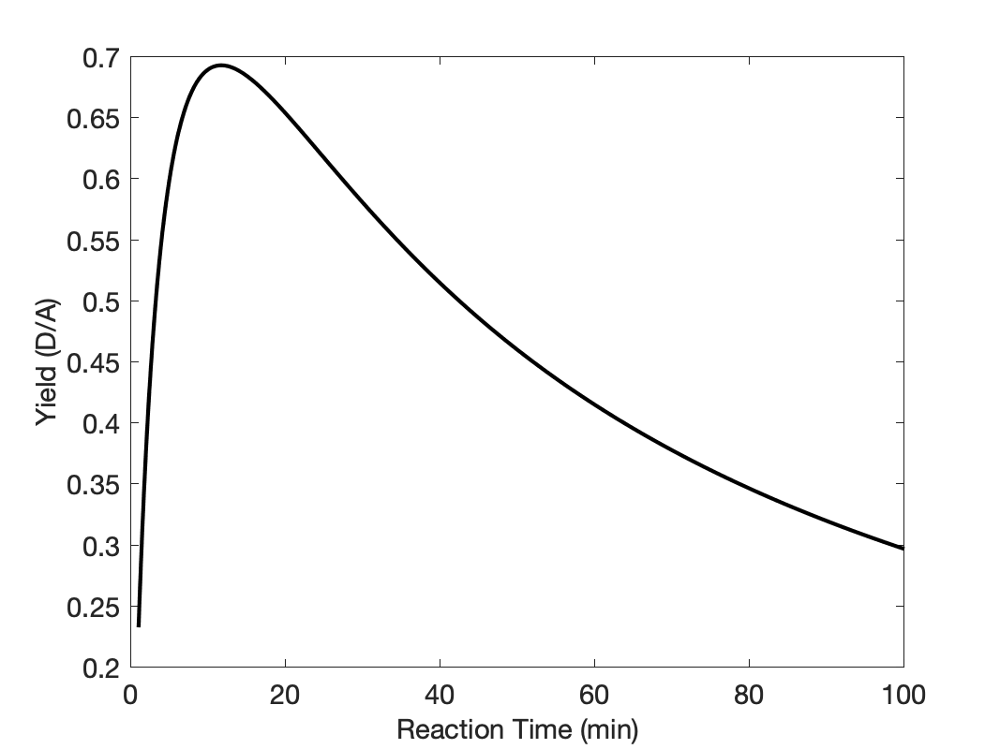
Summary
Reactions (1) and (2) constitute a series-parallel reaction network. The desired product, D, is an intermediate product. It is produced in reaction (1) and consumed in reaction (2). Assuming that the temperature affects the two reactions equally, the yield of an intermediate product is expected to pass through a maximum as the reaction time increases as seen in Figure 13.6. This can be predicted using a quantitative analysis
Qualitative Analysis
The reason for the maximum is qualitatively easy to understand as long as the effect of temperature is comparable for the two reactions. At the start of the reaction, the concentrations a A and B will be large and those of D, U, and Z will be small. The rate of reaction (1) will be positive while that for reaction (2) will be zero. Consequently, during a very brief interval at the start of the reaction, the concentrations of A and B will decrease and the concentrations of D and Z will increase.
During the next brief interval in time, the rate of reaction (1) will be smaller because the concentrations of A and B will be smaller, and the rate of reaction (2) no longer will equal zero because a small amount D will be present leading to a positive rate. The concentrations of A and B will again decrease and the concentration of Z will again increase. During this second brief interval it can be expected that the rate of reaction (1) will be greater than the rate of reaction (2) because only a small concentration of D will be present. Hence during the second small interval of time, the concentration of D will again increase, as can be seen in Figure 13.6.
For as long as the rate of reaction (2) remains smaller than the rate of reaction (1), the amount of D will be increasing, but its rate of increase will get smaller and smaller. The reason for this is that the concentrations of A and B will be decreasing, and hence the rate of reaction (1) will be decreasing. At the same time, the rate of reaction (2) will be increasing as the concentration of D builds. This can be seen in Figure 13.6 where the curvature of the yield plot is initially concave downward,
Eventually, the rate of reaction (2) will become equal to the rate of reaction (1). For that instant in time, the yield of D will not be changing. This corresponds to the maximum in Figure 13.6. At times beyond the maximum the rate of reaction (1) is less than the rate of reaction (2), so the concentration of D decreases. As the concentrations of both reactants, A and D, continue to decrease, both reactions (1) and (2) become slower and slower. This can be seen at larger reaction times in Figure 13.6 where the curve is concave upward. Eventually, at very large reaction time, the rates will equal zero and all of the D will have been consumed.
Note
When the reactor design equations are solved numerically, a function that calculates the derivatives given values of the independent and dependent variables must be provided. In the solution above, the IVODEs were re-written as a matrix equation and equation (23) was used to calculate the derivatives. There is an alternative approach wherein the IVODEs do not need to be written as a matrix equation.
If equations (5) through (9) are substitured into equation (11), equation (24) results.
\[ \begin{aligned} - &RT\left(\frac{dn_A}{dt} + \frac{n_B}{dt} + \frac{n_D}{dt} + \frac{n_Z}{dt} + \frac{n_U}{dt} \right) \\&+ V\frac{dP}{dt} - R\left(n_A + n_B + n_D + n_Z + n_U \right)\frac{dT}{dt} = 0 \end{aligned} \]
\[ \begin{aligned} - &RT\cancelto{0}{\left(-r_1V + \left( -r_1 - r_2 \right)V + \left( r_1 - r_2 \right)V + \left( r_1 + r_2 \right)V + r_2V \right)} \\&+ V\frac{dP}{dt} - R\left(n_A + n_B + n_D + n_Z + n_U \right)\frac{dT}{dt} = 0 \end{aligned} \]
\[ V\frac{dP}{dt} = R\left(n_A + n_B + n_D + n_Z + n_U \right)\frac{dT}{dt} \tag{24} \]
Substitution of equation (24) into equation (10) then leads to equation (25).
\[ \begin{aligned} - &V\frac{dP}{dt} + \\&\left( n_A \hat C_{p,A} + n_B \hat C_{p,B} + n_D \hat C_{p,D} + n_Z \hat C_{p,Z} + n_U \hat C_{p,U} \right) \frac{dT}{dt} \\&= \dot Q - \left( r_1 \Delta H_1 + r_2 \Delta H_2\right)V \end{aligned} \]
\[ \begin{aligned} - &R\left(n_A + n_B + n_D + n_Z + n_U \right)\frac{dT}{dt} + \\&\left( n_A \hat C_{p,A} + n_B \hat C_{p,B} + n_D \hat C_{p,D} + n_Z \hat C_{p,Z} + n_U \hat C_{p,U} \right) \frac{dT}{dt} \\&= \dot Q - \left( r_1 \Delta H_1 + r_2 \Delta H_2\right)V \end{aligned} \]
\[ \begin{aligned} &\begin{pmatrix} n_A \left(\hat C_{p,A} - R\right) + n_B \left(\hat C_{p,B} - R\right) + n_D \left(\hat C_{p,D} - R\right) \\+ n_Z \left(\hat C_{p,Z} - R\right) + n_U \left(\hat C_{p,U} - R\right) \end{pmatrix} \frac{dT}{dt} \\&= \dot Q - \left( r_1 \Delta H_1 + r_2 \Delta H_2\right)V \end{aligned} \]
\[ \frac{dT}{dt} = \frac{\dot Q - \left( r_1 \Delta H_1 + r_2 \Delta H_2\right)V}{\begin{pmatrix} n_A \left(\hat C_{p,A} - R\right) + n_B \left(\hat C_{p,B} - R\right) + n_D \left(\hat C_{p,D} - R\right) \\+ n_Z \left(\hat C_{p,Z} - R\right) + n_U \left(\hat C_{p,U} - R\right) \end{pmatrix}} \tag{25} \]
Here, instead of solving the seven IVODEs, (5) through (11), the six IVODEs, (5), (6), (7), (8), (9), and (25) can be solved to find \(n_A\left(t\right)\), \(n_B\left(t\right)\), \(n_D\left(t\right)\), \(n_Z\left(t\right)\), \(n_U\left(t\right)\), and \(T\left(t\right)\). The pressure, \(P\left(t\right)\) can then be calculated using the ideal gas law.
Notice, in particular, that when solving the latter set of IVODEs numerically, the derivatives, \(\frac{dn_A}{dt}\), \(\frac{dn_B}{dt}\), \(\frac{dn_D}{dt}\), \(\frac{dn_Z}{dt}\), \(\frac{dn_U}{dt}\), and \(\frac{dT}{dt}\), now can be calculated from equations (5), (6), (7), (8), (9), and (25) and there is no need to write the IVODEs as a matrix equation.
Note
In this example series-parallel reactions are occurring where the desired product is produced in one reaction and consumed by another. In this situation it is often found that the reaction time has the greatest effect upon the amount of the desired product, as was the case here. Other process parameters such as the temperature will also affect the results, but often their effect on the amount of desired product is weaker. Temperature can be an effective parameter for adjusting the selectivity of multiple reactions if the activation energies of the reactions differ significantly.
13.7.4 Optimization of Net Production Rate
The rate expression for liquid-phase reaction (1) is given in equation (2). The rate coefficient displays Arrhenius temperature dependence with a pre-exponential factor of 2.59 x 109 min-1 and an activation energy of 16.5 kcal mol-1. The heat of reaction (1) may be taken to be constant and equal to -22,200 cal mol-1. A solution containing only A at a concentration of 2 M and a temperature of 23 °C is going to be processed in a BSTR. The heat capacity of the solution is approximately constant and equal to 440 cal L-1 K-1, and its density is constant.
\[ A \rightarrow Z \tag{1} \]
\[ r_1 = k_1C_A \tag{2} \]
The 4.0 L BSTR has a perfectly mixed jacket with a volume of 0.5 L, a heat transfer area of 0.6 ft2, and a heat transfer coefficient of 1.13 x 104 cal ft-2 h-1 K-1. Cooling water at 20 °C can be fed to the jacket. The water may be taken to have a constant density of 1 g cm-3 and a constant heat capacity of 1 cal g-1 K-1. A heating coil with a heat transfer coefficient of 3.8 x 104 cal ft-2 h-1 K-1 and a heat transfer area of 0.23 ft2 can be submerged in and extracted from the reacting solution. Saturated steam at 120 °C can admitted to the coil.
The BSTR is charged with 4 L of a 2 M solution of A at 23 °C. Initially there is no flow to the jacket, but it is filled with water, also at 23 °C. To start the batch process, the steam is admitted to the coil, and the coil is immersed in the solution. When the reacting fluid reaches 50 °C, the coil is extracted from the reacting fluid and cooling water flow to the jacket is started. When the reacting fluid reaches a temperature of 25 °C the cooling water flow is stopped, the reactor is drained and preparations for processing the next batch begin. The BSTR pressure is constant throughout all stages of processing. If the turnaround time for the reactor is 25 min, what coolant flow rate will maximize the net rate of production of Z? Plot the conversion of A and the reacting fluid temperature vs. reaction time corresponding to the coolant flow rate that maximizes the net rate and comment on the results.
Click Here to See What an Expert Might be Thinking at this Point
Using the criteria presented in Chapter 12, this is an isolated reactor modeling assignment. The system consists of a BSTR and no other equipment. The reactor and its operation are described. The reaction taking place is indentified and its rate expression is provided, and it asks for a reactor input, namely the coolant flow rate. This is an optimization assignment because the coolant flow rate of interest is the one that maximizes the net rate of production of Z.
Having identified this as an isolated reactor optimization assignment, I know from Chapter 12 that completing the assignment entails five basic steps.
- Summarize the information provided in the assignment.
- Formulate the solution mathematically.
- Implement the solution numerically.
- Execute the solution.
- Report and comment upon the results.
To complete the first step, I’ll read through the assignment and list the following things. Since this reactor has both a jacket and a coil, I’ll use a subscripted “ex” to denote quantities related to the jacket and “coil” to denote quantities related to the coil. The operating protocol for this reactor has two stages, a heating stage and a cooling stage. I’ll use a subscripted “0” to denote values of quantities at the start of the heating stage, a subscripted “1” to denote quantities at end of the heating stage (which is also the start of the cooling stage), and a subscripted “f” to denote quantities at the end of the cooling stage (which is also the end of the process).
- Summarize the information provided in the assignment.
- Reactor type and operational mode
- Constant quantities
- Adjusted quantities
- Missing reactor input or process parameter and specified reactor response
- Quantities of interest
Information Provided in the Assignment
Reactor: BSTR with a 2 step operating protocol
Given Constants: \(k_{0,1}\) = 2.59 x 109 min-1, \(E_1\) = 16.5 kcal mol-1, \(\Delta H_1\) = -22,200 cal mol-1, \(C_{A,0}\) = 2 M, \(T_0\) = 23 °C, \(\breve{C}_p\) = 440 cal L-1 K-1, \(V\) = 4.0 L, \(V_{ex}\) = 0.5 L, \(A_{ex}\) = 0.6 ft2, \(U_{ex}\) = 1.13 x 104 cal ft-2 h-1 K-1, \(T_{ex,in}\) = 20 °C, \(\rho_{ex}\) = 1 g cm-3, \(\tilde{C}_{p,ex}\) = 1 cal g-1 K-1, \(U_{coil}\) = 3.8 x 104 cal ft-2 h-1 K-1, \(A_{coil}\) = 0.23 ft2, \(T_{coil}\) = 120 °C, \(T_{ex,0}\) = 23 °C, \(T_1\) = 50 °C, \(T_f\) = 25 °C, \(t_{turn}\) = 25 min.
Click Here to See What an Expert Might be Thinking at this Point
Upon reading the assignment narrative, I see that one of the quantities of interest is the coolant flow rate during the second stage that maximizes the net rate of reaction. To find the optimum coolant flow rate, \(\dot{m}_{ex,opt}\), the net rate will be calculated using a range of coolant flow rates, and the one that maximizes the net rate will be identified. For this reason, I’ll list the coolant flow rate as an adjusted quantity.
Adjusted Quantity: \(\dot{m}_{ex}\)
Quantities of Interest: \(\dot{m}_{ex,opt}\), \(r_{Z,net,max}\), \(f_A\left(t\right)\Big\vert_{\dot{m}_{ex,opt}}\), \(T\left(t\right)\Big\vert_{\dot{m}_{ex,opt}}\)
Click Here to See What an Expert Might be Thinking at this Point
The second basic step for completing an isolated BSTR modeling assignment is to formulate the solution mathematically. From my reading of this chapter, I know, generally, how to do this.
- Formulate the solution mathematically.
- Choose, write and simplify the reactor design equations needed to model the reactor.
- Identify the independent variable and the dependent variables, and ensure that the number of dependent variables is equal to the number of reactor design equations.
- Specify the initial values and the stopping criterion, and write equations for calculating their values.
- Write equations to express every quantity appearing in the reactor design equations or in equations that will be substituted into the reactor design equations in terms of known constants, the independent variable, the dependent variables, the missing reactor input or process parameter (if there is one), and the adjusted quantities (if there are any).
- Write the equations to calculate every quantity of interest and the response that was specified in the assignment (if there is one) using the results from solving the reactor design equations, the independent variable, the dependent variables, the missing reactor input or process parameter (if there is one), and the adjusted quantities (if there are any).
- Briefly explain or outline the sequence of calculations that must be used to calculate and process the quantities of interest (and the response that was specified in the assignment, if there is one).
Mathematical Formulation of the Solution
Click Here to See What an Expert Might be Thinking at this Point
The operational protocol for this reactor has two stages. I need to write and simplify the reactor design equations needed to model each stage of the operation of this system. The reactor is the same in the heating and cooling stages, so the same reactor design equation apply to both stages, but some of the terms in the equations change between the first and second stage of operation.
The reactor design equations always include at least one mole balance. The general BSTR mole balance is given in Equation 6.8. I’ll write a mole balance for both of the reagents in this system, noting that the sum reduces to a single term since only one reaction is taking place.
\[ \frac{dn_i}{dt} = V \cancelto{\nu_{i,1}r_1}{\sum_j \nu_{i,j}r_j} \]
The BSTR is not isothermal, so I must include an energy balance on the reacting fluid among the design equations. The general BSTR mole balance is given in Equation 6.9. Assuming the liquid to be incompressible and the reactor walls to be rigid, both the pressure and volume will be constant, so their time-derivatives will equal zero. The work associated with mixing the reactor can also be assumed to be negligible. There is only one reaction occurring, so the final sum will reduce to a single term. In addition, the assignment provides the volumetric heat capacity of the entire solution, so the sensible heat term can be written in terms of that heat capacity, Equation 6.10. During the first stage of the operating protocol, heat is exchanged with both the cooling water and the steam, so the rate of heat exchange must be split into two terms. During the second stage the coil is not present.
\[ \cancelto{V \breve{C}_p}{\left(\sum_i n_i \hat C_{p,i} \right)} \frac{dT}{dt} - V\cancelto{0}{\frac{dP}{dt}} - P \cancelto{0}{\frac{dV}{dt}} = \cancelto{\dot{Q}_{ex} + \dot{Q}_{coil}}{\dot Q} - \cancelto{0}{\dot W} - V \cancelto{r_1 \Delta H_1}{\sum_j \left(r_j \Delta H_j \right)} \]
\[ V \breve{C}_p \frac{dT}{dt} = \dot{Q}_{ex} + \dot{Q}_{coil} - V r_1 \Delta H_1 \]
There are two heat exchange fluids in this system. The water in the jacket exchanges sensible heat so the energy balance on it is given by Equation 6.2. During the first stage of the operating protocol, the coolant is not flowing, so \(\dot{m}_{ex} = 0\). Noting that the heat capacity is constant, the integral is easily evaluated.
\[ \rho_{ex} V_{ex} \tilde C_{p,ex}\frac{dT_{ex}}{dt} = -\dot{Q}_{ex} - \dot m_{ex} \int_{T_{ex,in}}^{T_{ex}} \tilde C_{p,ex}dT \]
The steam in the coil exchanges latent heat, so its temperature is known and constant. As a consequence, the mole balances, energy balance on the reacting fluid and energy balance on the cooling water can be solved independently of the energy balance on the steam. The problem does not ask any questions about the steam flow rate or how much of it condenses, so an energy balance on the steam is not needed.
Momentum balances are not used for stirred tank reactors, so the full set of reactor design equations consists of mole balances on A and Z, an energy balance on the reacting fluid and an energy balance on the cooling water.
Reactor Design Equations
Mole balances on A and Z, equations (3) and (4) are the same in heating stage of the protocol and in the cooling stage. An energy balance on the reacting fluid and an energy balance on the coolant in the shell during the heating stage are shown in equations (5) and (6). During the cooling stage of the operating protocol, an energy balance on the reacting fluid and an energy balance on the coolant take the forms shown in equations (7) and (8).
\[ \frac{dn_A}{dt} = -Vr_1 \tag{3} \]
\[ \frac{dn_Z}{dt} = Vr_1 \tag{4} \]
\[ \frac{dT}{dt} = \frac{\dot{Q}_{ex} + \dot{Q}_{coil} - Vr_1 \Delta H_1}{V \breve C_p} \tag{5} \]
\[ \frac{dT_{ex}}{dt} = -\left(\frac{\dot{Q}_{ex}}{\rho_{ex} V_{ex} \tilde C_{p,ex}}\right) \tag{6} \]
\[ \frac{dT}{dt} = \frac{\dot{Q}_{ex} - Vr_1 \Delta H_1}{V \breve C_p} \tag{7} \]
\[ \frac{dT_{ex}}{dt} = -\left(\frac{\dot{Q}_{ex} + \dot m_{ex} \tilde{C}_{p,ex} \left(T_{ex} - T_{ex,in}\right)}{\rho_{ex} V_{ex} \tilde C_{p,ex}}\right) \tag{8} \]
Click Here to See What an Expert Might be Thinking at this Point
In both stages of operation, the four reactor design equations are IVODEs, and they contain four dependent variables (\(n_A\), \(n_B\), \(T\), and \(T_{ex}\)), so no additional IVODEs are needed. Initial values and a stopping criterion are needed to solve the design equations.
The instant the solution is added to the reactor can be defined as \(t=0\). This marks the start of the heating phase. The molar amounts of A, \(n_{A,0}\), and Z, 0.0 (only A is present initially), the reacting fluid temperature, \(T_0\), and the cooling water temperature, \(T_{ex,0}\), at that time are then the initial values for the analysis of the heating phase. It ends when the reacting fluid reaches \(T_1 = 50 °C\). The initial molar amount of A is not given, but it can be calculated from the initial concentration.
The cooling phase begins the instant the heating phase ends, so the initial values for the cooling phase are the final values from the heating phase. The cooling phase ends when the reacting fluid cools down to \(T_f = 25 °C\), so that is the stopping criterion for the cooling phase.
The initial values and stopping criterion for solving the reactor design equations for the heating phase are presented in Table 13.5. The initial molar amount of A can be calculated using equation (9). If \(t_1\), \(n_{A,1}\), \(n_{Z,1}\), and \(T_{ex,1}\) represent the values of \(t\), \(n_A\), \(n_Z\), and \(T_{ex}\) at the end of the heating phase, those values are also the intial values for the cooling phase, which ends when \(T = T_f\). Thus, the initial values and stopping criterion for the coolling phase are given in Table 13.6
| Variable | Initial Value | Stopping Criterion |
|---|---|---|
| \(t\) | \(0\) | |
| \(n_A\) | \(n_{A,0}\) | |
| \(n_Z\) | 0 | |
| \(T\) | \(T_0\) | \(T_1\) |
| \(T_{ex}\) | \(T_{ex,0}\) |
\[ n_{A,0} = C_{A,0}V \tag{9} \]
| Variable | Initial Value | Stopping Criterion |
|---|---|---|
| \(t\) | \(t_1\) | |
| \(n_A\) | \(n_{A,1}\) | |
| \(n_Z\) | \(n_{Z,1}\) | |
| \(T\) | \(T_1\) | \(T_f\) |
| \(T_{ex}\) | \(T_{ex,1}\) |
Click Here to See What an Expert Might be Thinking at this Point
The design equations cannot be solved until every quantity appearing in them and every quantity substituted into them is expressed in terms of known constants, the independent variable, \(t\), and the dependent variables, \(n_A\), \(n_Z\), \(T\), and \(T_{ex}\). As noted earlier, the design equations will be solved using a range of values of \(\dot{m}_{ex}\), so \(\dot{m}_{ex}\) will be a known constant when the reactor design equations are solved.
Looking at the reactor design equations, I see that \(V\), \(\breve{C}_p\), \(\Delta H_1\), \(\rho_{ex}\), \(\tilde{C}_{p,ex}\), \(\dot{m}_{ex}\), and \(T_ex,in\) are known constants. The remaining quantities in the reactor design equations, \(r_1\), \(\dot{Q}=_{ex}\), and \(\dot{Q}_{coil}\) must be expressed in terms of known constants, the independent variable, and the dependent variables.
The reaction rate, \(r_1\), is given by equation (2); it introduces \(k_1\) and \(C_A\) when it is substituted into the design equations. The rate coefficient can be expressed in terms of known constants (\(k_{0,1}\), \(E_1\), and the gas constant, \(R\)) using the Arrhenius expression, Equation 4.8. The concentration of A can be expressed in terms of the molar amount of A and the volume using the definition of concentration.
The rate of heat exchange between the water in the jacket and the reacting fluid can be expressed in terms of the known constants, \(A_{ex}\) and \(U_{ex}\), and the jacket and reacting fluid temperatures. Similarly, the rate of heat exchange between the steam in the coil and the reacting fluid can be expressed in terms of the known constants, \(U_{coil}\), \(A_{coil}\), and \(T_{coil}\) = 120 °C, and the reacting fluid temperature.
Ancillary Equations for Solving the Reactor Design Equations
The rate is given by equation (2), where the rate coefficient is found using equation (8) and the concentration of A is found using equation (9).
\[ k_1 = k_{0,1}\exp{\left( \frac{-E_1}{RT} \right)} \tag{10} \]
\[ C_A = \frac{n_A}{V} \tag{11} \]
The rate of heat exchange with the steam in the coil is given by equation (10), and the rate of heat exchange between the water in the jacket and the reacting fluid is given by equation (11).
\[ \dot{Q}_{coil} = U_{coil} A_{coil} \left(T_{coil} - T\right) \tag{12} \]
\[ \dot{Q}_{ex} = U_{ex} A_{ex} \left(T_{ex} - T\right) \tag{13} \]
Click Here to See What an Expert Might be Thinking at this Point
At this point, the design equations can be solved to find \(n_A\left(t\right)\), \(n_Z\left(t\right)\), \(T\left(t\right)\), and \(T_{ex}\left(t\right)\) at times between \(t=0\) and the time, \(t_f\) (the time when the reactor has cooled to 25 °C). The net rate of production of Z can then be calculated using , and the conversion as a function of processing time can be calculated using its definition, Equation 3.4. If the calculations are repeated using a range of values of \(\dot{m}_{ex}\) that is sufficiently wide that \(r_{Z,net}\) passes through a maximum, the maximum net rate and the optimum coolant flow rate can be identified.
Ancillary Equations for Calculating the Quantities of Interest
\[ r_{Z,net} = \frac{n_Z\big\vert_{t_f}}{t_f + t_{turn}} \tag{14} \]
\[ f_A\left(t\right) = \frac{n_{A,0} - n_A\left(t\right)}{n_{A,0}} \tag{15} \]
\[ \dot{m}_{ex,opt} = \underset{\dot{m}_{ex}}{\arg\max}\left( r_{Z,net} \right) \tag{16} \]
\[ r_{Z,net,max} = \underset{\dot{m}_{ex}}{\max}\left( r_{Z,net} \right) \tag{17} \]
Sequence of Calculations to Complete the Assignment
- Choose a value for \(\dot{m}_{ex}\).
- Substitute given and known constants into all equations.
- Substitute equations (10) and (11) into equation (2).
- Substitute equations (2), (12) and (13) into equations (3) through (8).
- Calculate \(n_{A,0}\) using equation (9).
- Solve equations (3) through (6) using the initial values and stopping criterion in Table 13.5 to get \(n_A\left(t\right)\), \(n_Z\left(t\right)\), \(T\left(t\right)\) and \(T_{ex}\left(t\right)\) during the heating stage.
- Solve equations (3), (4), (7), and (8) using the initial values and stopping criterion in Table 13.6 to get \(n_A\left(t\right)\), \(n_Z\left(t\right)\), \(T\left(t\right)\) and \(T_{ex}\left(t\right)\) during the cooling stage.
- Calculate \(r_{Z,net}\) using equation (15).
- Repeat steps 1 through 8 many times using a range of values of \(\dot{m}_{ex}\) that is broad enough for \(r_{Z,net}\) to pass through a maximum.
- Identify the optimum coolant flow rate and the maximum net rate using equations (16) and (17).
- Repeat steps 1 through 7 using the optimum coolant flow rate in step 1.
- Use the results from step 7 to calculate the conversion as a function of time at the optimum coolant flow rate, equation (15).
- Plot \(f_A\left(t\right)\Big\vert_{\dot{m}_{ex,opt}}\) vs. \(t\) and \(T\left(t\right)\Big\vert_{\dot{m}_{ex,opt}}\) vs. \(t\).
Click Here to See What an Expert Might be Thinking at this Point
Having formulated the solution mathematically, the third basic step for completing an isolated reactor modeling assignment is to implement the solution numerically. I know that this will entail creating two computer functions.
- Implement the solution numerically.
- Create a response function.
- Pass the missing value (if there is one) and the adjusted values (if there are any) to it as arguments.
- Solve the reactor design equations for each set of adjusted values.
- Calculate and return the quantities of interest (and the specified response if there is one) corresponding to each set of adjusted values.
- Create a calculations function.
- Perform the sequence of calculations that is needed to calculate the quantities of interest, calling or using the response function as needed.
- Process the quantities of interest as necessary to complete the assignment.
- Create a response function.
Numerical Implementation of the Solution
Click Here to See What an Expert Might be Thinking at this Point
I know that the purpose of the response function is to calculate the quantities of interest. In this assignment there isn’t a missing reactor input or process parameter. That means that the response function will not have a missing value argument.
There is an adjusted value, namely \(\dot{m}_{ex}\), so the response function will be passed a vector containing a range of values of $_{ex}. The response function must loop through those values. For each one it needs to complete steps 2 through 12 in the sequence given above. It should then return the quantities of interest: \(\dot{m}_{ex,opt}\), \(r_{Z,net,max}\), \(f_A\left(t\right)\Big\vert_{\dot{m}_{ex,opt}}\), \(T\left(t\right)\Big\vert_{\dot{m}_{ex,opt}}\).
Response Function
The response function is created with the following structure:
- It is passed vector containing a range of coolant flow rates, \(\dot{m}_{ex}\), as an argument.
- It defines variables and assigns values to them for all known and given constants.
- It loops over the values of the coolant flow rate. For each coolant flow rate
- It sets the initial values and stopping criterion according to Table 13.5 and equation (9).
- In preparation for solving equations (3) through (6), it defines a function to evaluate \(\frac{dn_A}{dt}\), \(\frac{dn_Z}{dt}\), \(\frac{dT}{dt}\), and \(\frac{dT_{ex}}{dt}\) using equations (3) through (6). That function
- receives values for \(t\), \(n_A\), \(n_Z\), \(T\), and \(T_{ex}\),
- calculates \(k\) and \(C_A\) using equations (10) and (11),
- calculates \(r_1\), \(\dot{Q}_{coil}\), and \(\dot{Q}_{ex}\) using equations (4), (12), and (13).
- calculates and returns \(\frac{dn_Z}{dt}\), \(\frac{dT}{dt}\), and \(\frac{dT_{ex}}{dt}\) using equations (3) through (6).
- The response function next calls an IVODE solver to solve equations (3) through (6) and get vectors containing values for \(t\), \(n_A\), \(n_Z\), \(T\), and \(T_{ex}\) during the heating stage, passing the function above and the initial values and stopping criterion in Table 13.5 as arguments.
- In preparation for solving equations (3), (4), (7), and (8), it defines a function to evaluate \(\frac{dn_A}{dt}\), \(\frac{dn_Z}{dt}\), \(\frac{dT}{dt}\), and \(\frac{dT_{ex}}{dt}\) using those equations. That function
- receives values for \(t\), \(n_A\), \(n_Z\), \(T\), and \(T_{ex}\),
- calculates \(k\) and \(C_A\) using equations (10) and (11),
- calculates \(r_1\), \(\dot{Q}_{coil}\), and \(\dot{Q}_{ex}\) using equations (4), (12), and (13).
- calculates and returns \(\frac{dn_Z}{dt}\), \(\frac{dT}{dt}\), and \(\frac{dT_{ex}}{dt}\) using equations (3), (4), (7), and (8).
- The response function next calls an IVODE solver to solve equations (3), (4), (7), and (8) and get vectors containing values for \(t\), \(n_A\), \(n_Z\), \(T\), and \(T_{ex}\) during the cooling stage, passing the function above and the initial values and stopping criterion in Table 13.6 as arguments.
- It calculates and saves \(r_{Z,net}\) using equation (14).
- After looping through all of the coolant flow rates, it identifies the maximum net rate and the corresponding optimum coolant flow rate, equations (16) and (17).
- It solves the IVODEs as above using the optimum coolant flow rate.
- It combines the results for the heating stage and the cooling stage.
- It calculate \(f_A\left(t\right)\Big\vert_{\dot{m}_{ex,opt}}\).
- It returns the quantities of interest: \(\dot{m}_{ex,opt}\), \(r_{Z,net,max}\), \(f_A\left(t\right)\Big\vert_{\dot{m}_{ex,opt}}\), \(T\left(t\right)\Big\vert_{\dot{m}_{ex,opt}}\).
Click Here to See What an Expert Might be Thinking at this Point
The calculations function is responsible for performing the entire sequence of calculations listed at the end of the mathematical formulation. After setting a range of values for the coolant flow rate, it can perform steps 2 through 12 by simply calling the response function. Then it can use the results to make the graphs requested in the assighment.
Calculations Function
The calculations function is created with the following structure:
- It takes no arguments.
- It sets a range of values of \(\dot{m}_{ex}\).
- It calls the response function to get the quantities of interest.
- It checks whether \(r_{Z,net}\) passes through a maximum within the range of values of \(\dot{m}_{ex}\).
- If it does not pass through a maximum, reports that a maximum was not found and suggests repeating the calculations using a broader range of values of \(\dot{m}_{ex}\).
- If \(r_{Z,net}\) does pass through a maximum, it reports the optimum coolant flow rate and the maximum net rate, plots and displays \(f_A\left(t\right)\Big\vert_{\dot{m}_{ex,opt}}\) vs. \(t\) and \(T\left(t\right)\Big\vert_{\dot{m}_{ex,opt}}\) vs. \(t\), and saves the results to one or more files.
Performing the Calculations
After creating the response function and calculations function as described, all of the calculations needed to complete the assignment can be performed by executing the calculations function. (If the calculations function reports that a maximum was not fould, the range of values of \(\dot{m}_{ex}\) must be broadened, and the calculations function executed again.)
Results
The net rate of production of Z is plotted as a function of the cooling water flow rate in Figure 13.7. The maximum net rate, 0.063 mol/min, occurs at a coolant flow rate of 183 g/min. The conversion and reacting fluid temperature profiles at that coolant flow rate are shown in Figure 13.8 and Figure 13.9.
Knowing the initial concentration of A and the Arrhenius parameters, the conversion and temperature profiles were used to calculate the instantaneous reaction rate profile shown in Figure 13.10, where the rate scale is logarithmic.
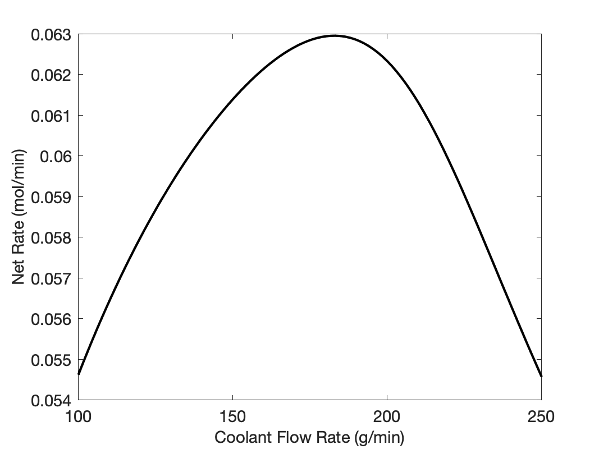
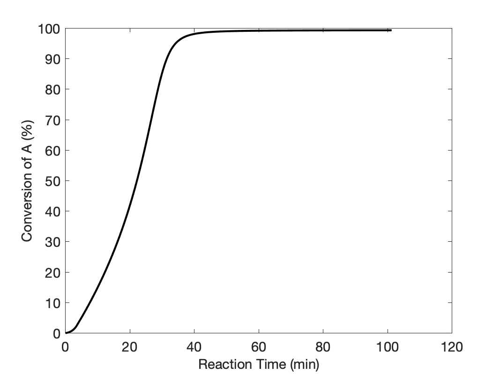
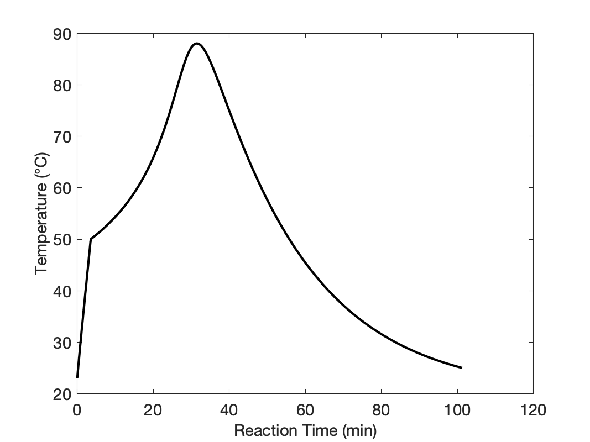
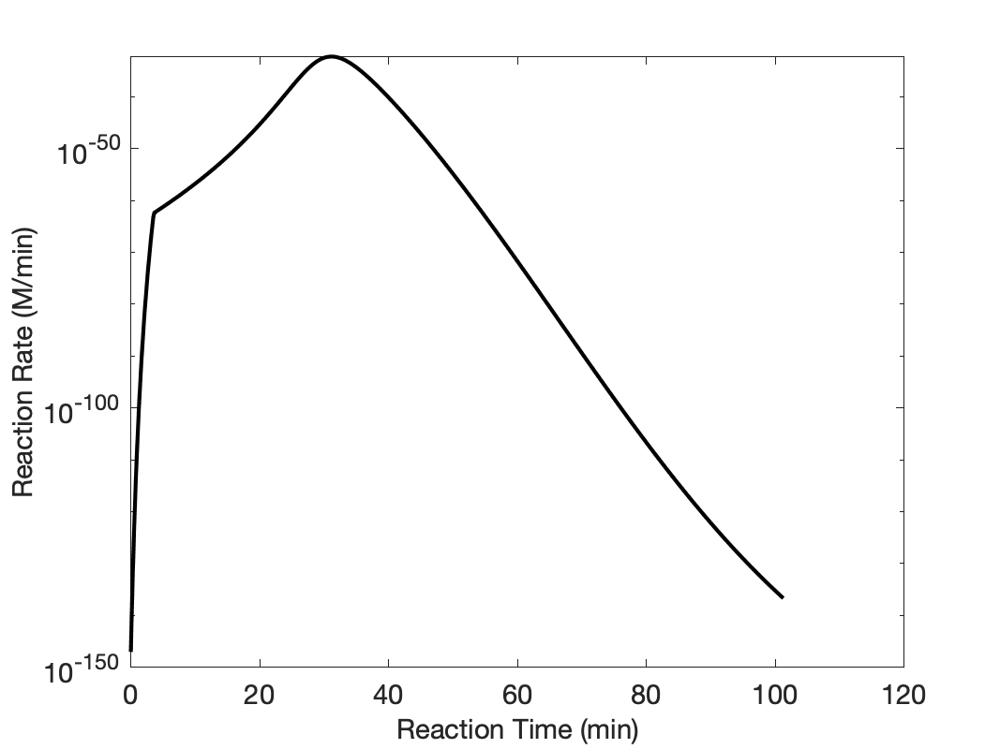
Summary and Comments
The optimum coolant flow rate is 183 g/min. At that coolant flow rate, the net rate of production of Z is 0.063 mol/min. The conversion of A and reacting fluid temperature during processing at the optimum coolant flow rate are shown in Figures 13.8 and 13.9.
Figure 13.7 shows that the rate effectively zero when the reactant is charged to the BSTR. Figure 13.9 shows the steam heating increases the temperature to 50 °C in ca. 2.5 min, at which time the rate has become significant. The temperature continues to rise because heat is being released by reaction faster than it is being removed by the coolant. As the reactant is depleted, the rate does not increase as rapidly until eventually, after ca. 31.1 min, the rate reaches its maximum value. As the rate decreases, the amount of heat released due to reaction decreases until, at ca. 31.5 min, it becomes equal to the rate at which the coolant is removing heat. At that point the temperature passes through a maximum. After that the coolant removes heat faster than it is generated, and after ca. 100 min the temperature reaches 25 °C and processing ends. The conversion at this point is over 99%.
Note
In this example, the net rate of reaction was maximized with respect to the cooling water flow rate. It might be possible to improve the process further by adjusting both the cooling water flow rate and the temperature where the heating coil is removed. If that were done, the graphical approach used here to maximize the net rate would not be the best mathematical approach. Instead, a reaction engineer might use software designed for multivariable optimization.
13.8 Symbols Used in Chapter 13
| Symbol | Meaning |
|---|---|
| \(i\) | index denoting a reagent. |
| \(n_i\) | molar amount of reagent \(i\), an additional subscripted 0 denotes the initial molar amount. |
| \(r_{i,net}\) | net rate of generation of reagent \(i\). |
| \(t_{rxn}\) | lenght of time during which reaction occurs. |
| \(t_{turn}\) | turnaround time. |